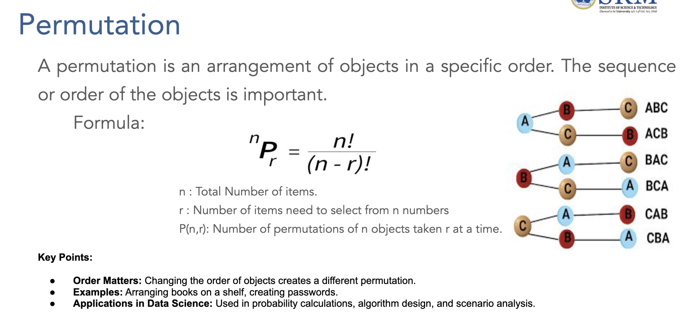

By completing this comprehensive guide, you will:
Probability refers to the chance/likelihood of a particular event taking place. It's a mathematical measure that quantifies uncertainty and helps predict outcomes in random experiments.
Mathematical Definition:
P(Event) = Number of Favorable Outcomes / Total Number of Possible Outcomes
Key Properties:
The set of all possible outcomes of an experiment.
Example: When rolling a die
S = {1, 2, 3, 4, 5, 6}
Any outcome or collection of outcomes from an experiment.
Examples:
Experiment: Testing 3 products for defects Sample Space: S = {DDD, DDG, DGD, GDD, DGG, GDG, GGD, GGG}
Events:
P(A₁ ∪ A₂ ∪ A₃) = P(A₁) + P(A₂) + P(A₃)
P(All Good) = 1/8 = 0.125
P(At least 1 defective) = 1 - P(All Good) = 1 - 0.125 = 0.875
P(All Good) + P(At least 1 defective) = 0.125 + 0.875 = 1.0 ✓
Definition: Based on logical analysis of the situation without conducting experiments.
Formula:
P(Event) = Number of Favorable Outcomes / Total Number of Equally Likely Outcomes
Conditions:
Example: Card Drawing
P(Drawing an Ace) = 4 Aces / 52 Total Cards = 4/52 = 1/13 ≈ 0.077 = 7.7%
P(Drawing a Heart) = 13 Hearts / 52 Total Cards = 13/52 = 1/4 = 0.25 = 25%
Definition: Based on historical data or experimental results.
Formula:
P(Event) = Number of Times Event Occurred / Total Number of Trials
Example: Manufacturing Quality
Historical Data: Out of 10,000 products manufactured:
- 9,750 were good quality
- 250 were defective
P(Good Quality) = 9,750/10,000 = 0.975 = 97.5%
P(Defective) = 250/10,000 = 0.025 = 2.5%
Definition: Based on personal judgment, experience, or belief.
Characteristics:
Example: Business Investment
An experienced investor might say:
"I believe there's a 70% chance this startup will succeed"
P(Success) = 0.70 (based on expertise and market analysis)
Principle: If there are m ways to do one thing and n ways to do another, then there are m × n ways to do both.
Example: Password Creation
Password Requirements: 2 letters followed by 3 digits
- Letters: 26 choices for first position, 26 for second = 26 × 26 = 676
- Digits: 10 choices for each position = 10 × 10 × 10 = 1,000
- Total passwords: 676 × 1,000 = 676,000
Definition: Arrangements where order matters.

Formula:
nPr = n! / (n-r)!
Where:
Problem: Select and arrange 3 employees from 8 for morning, afternoon, and night shifts.
Solution:
8P3 = 8! / (8-3)! = 8! / 5! = 8 × 7 × 6 = 336 ways
Problem: Arrange 5 different products in a display window.
Solution:
5P5 = 5! / (5-5)! = 5! / 0! = 5! = 5 × 4 × 3 × 2 × 1 = 120 ways
Definition: Selections where order doesn't matter.
Formula:
nCr = n! / (r! × (n-r)!)
Problem: Select 4 people from 10 for a committee.
Solution:
10C4 = 10! / (4! × 6!) = (10 × 9 × 8 × 7) / (4 × 3 × 2 × 1) = 5,040 / 24 = 210 ways
Problem: Choose 3 products from 8 for quality testing.
Solution:
8C3 = 8! / (3! × 5!) = (8 × 7 × 6) / (3 × 2 × 1) = 336 / 6 = 56 ways
Marketing Campaign: Choose 2 advertising channels from 5 available
5C2 = 5! / (2! × 3!) = (5 × 4) / (2 × 1) = 10 combinations
Lottery Example: Choose 6 numbers from 49
Total combinations = 49C6 = 49! / (6! × 43!) = 13,983,816
P(Winning) = 1 / 13,983,816 ≈ 0.0000071%
Problem Statement: A website requires users to create a 4-character password using the digits 0-9. The digits cannot be repeated. How many different passwords can be generated?
Analysis:
Formula:
P(n,r) = n! / (n-r)!
P(10,4) = 10! / (10-4)! = 10! / 6!
Step-by-Step Solution:
Step 1: Identify the problem type
- Order matters → Permutation
- No repetition allowed
- n = 10 (digits 0-9), r = 4 (password length)
Step 2: Apply permutation formula
P(10,4) = 10! / 6!
= (10 × 9 × 8 × 7 × 6!) / 6!
= 10 × 9 × 8 × 7
= 5,040
Step 3: Verification
- 1st position: 10 choices
- 2nd position: 9 choices (can't repeat 1st)
- 3rd position: 8 choices (can't repeat 1st or 2nd)
- 4th position: 7 choices (can't repeat previous 3)
- Total: 10 × 9 × 8 × 7 = 5,040 ✓
Answer: Total possible passwords: 5,040
Problem Statement: A project manager has 5 distinct tasks to assign to 5 time slots in a day. Each task must be completed in one of the slots, and the order of tasks is crucial. How many different ways can the tasks be scheduled?
Analysis:
Formula:
P(n,n) = n! = 5!
Step-by-Step Solution:
Step 1: Identify the problem type
- Order matters → Permutation
- All tasks must be scheduled → P(5,5)
Step 2: Apply factorial formula
P(5,5) = 5! = 5 × 4 × 3 × 2 × 1 = 120
Step 3: Logical verification
- 1st time slot: 5 task choices
- 2nd time slot: 4 remaining choices
- 3rd time slot: 3 remaining choices
- 4th time slot: 2 remaining choices
- 5th time slot: 1 remaining choice
- Total: 5 × 4 × 3 × 2 × 1 = 120 ✓
Answer: There are 120 different ways to arrange the 5 tasks into the 5 available time slots.
Problem Statement: You have 4 distinct features (F1, F2, F3, F4) that you want to use for training a machine learning model. You are interested in analyzing different ways to order these features and how their order might affect the model's performance. How many different permutations of these features are possible?
Analysis:
Formula:
P(4,4) = 4!
Step-by-Step Solution:
Step 1: Identify the problem type
- Order matters → Permutation
- Using all features → P(4,4)
Step 2: Calculate permutations
P(4,4) = 4! = 4 × 3 × 2 × 1 = 24
Step 3: List some arrangements (verification)
F1,F2,F3,F4 | F1,F2,F4,F3 | F1,F3,F2,F4 | F1,F3,F4,F2
F1,F4,F2,F3 | F1,F4,F3,F2 | F2,F1,F3,F4 | F2,F1,F4,F3
... (24 total arrangements)
Answer: Total Permutations: 24 different ways to order the 4 features.
Problem Statement: Imagine you have 5 distinct books (A, B, C, D, E) and you want to select 3 of them. The number of possible combinations is calculated as:
Analysis:
Formula:
C(n,r) = n! / (r! × (n-r)!)
C(5,3) = 5! / (3! × 2!)
Step-by-Step Solution:
Step 1: Identify the problem type
- Order doesn't matter → Combination
- Selecting 3 from 5 → C(5,3)
Step 2: Apply combination formula
C(5,3) = 5! / (3! × 2!)
= (5 × 4 × 3!) / (3! × 2 × 1)
= (5 × 4) / (2 × 1)
= 20 / 2
= 10
Step 3: List all combinations (verification)
{A,B,C}, {A,B,D}, {A,B,E}, {A,C,D}, {A,C,E}
{A,D,E}, {B,C,D}, {B,C,E}, {B,D,E}, {C,D,E}
Total: 10 combinations ✓
Answer: Total Combinations: 10 ways to choose 3 books from 5.
Problem Statement: You are organizing a team-building event and need to select 3 team members from a pool of 8 employees. The order in which the team members are selected does not matter.
Analysis:
Formula:
C(8,3) = 8! / (3! × 5!)
Step-by-Step Solution:
Step 1: Identify the problem type
- Order doesn't matter → Combination
- Selecting 3 from 8 → C(8,3)
Step 2: Apply combination formula
C(8,3) = 8! / (3! × 5!)
= (8 × 7 × 6 × 5!) / (3! × 5!)
= (8 × 7 × 6) / (3 × 2 × 1)
= 336 / 6
= 56
Step 3: Business interpretation
- 56 different team compositions possible
- Each team has unique skill combination
- Optimal for testing different group dynamics
Answer: Total Combinations: 56 ways to select 3 team members from 8 employees.
Problem Statement: You are working on a machine learning project and have 15 distinct features (variables) available in your dataset. You want to select a subset of 5 features to use in your model. The order in which the features are selected does not matter.
Analysis:
Formula:
C(15,5) = 15! / (5! × 10!)
Step-by-Step Solution:
Step 1: Identify the problem type
- Order doesn't matter → Combination
- Selecting 5 from 15 → C(15,5)
Step 2: Apply combination formula
C(15,5) = 15! / (5! × 10!)
= (15 × 14 × 13 × 12 × 11) / (5 × 4 × 3 × 2 × 1)
= 360,360 / 120
= 3,003
Step 3: Machine learning interpretation
- 3,003 different feature combinations to test
- Each combination may yield different model performance
- Feature selection optimization requires systematic approach
Answer: There are 3,003 different ways to select 5 features from the 15 available features for use in your machine learning model.
Problem Statement: A digital marketing team has 12 different advertising channels available (social media platforms, search engines, email, etc.). They want to create a comprehensive campaign using exactly 4 channels, and the order of implementation matters for budget allocation and timing. How many different campaign strategies can they create?
Formula: P(12,4) = 12! / (12-4)! = 12! / 8!
Step-by-Step Solution:
Step 1: Problem analysis
- Order matters (implementation sequence affects budget flow)
- Selecting and arranging 4 from 12 → Permutation
Step 2: Calculate
P(12,4) = 12 × 11 × 10 × 9 = 11,880
Step 3: Business insight
- 11,880 different campaign sequences possible
- Each sequence has different cost and impact profiles
Answer: 11,880 different campaign strategies.
Problem Statement: A tech company needs to form a cross-functional team of 6 people from a pool of 20 employees (5 frontend developers, 5 backend developers, 5 designers, 5 product managers). They must select exactly 2 people from each department. How many different team compositions are possible?
Formula: C(5,2) × C(5,2) × C(5,2) × C(5,2) = [C(5,2)]⁴
Step-by-Step Solution:
Step 1: Calculate selections per department
C(5,2) = 5! / (2! × 3!) = (5 × 4) / (2 × 1) = 10
Step 2: Apply multiplication principle
Total = C(5,2) × C(5,2) × C(5,2) × C(5,2)
= 10 × 10 × 10 × 10 = 10,000
Step 3: Verification
- Frontend: 10 ways to choose 2 from 5
- Backend: 10 ways to choose 2 from 5
- Design: 10 ways to choose 2 from 5
- Product: 10 ways to choose 2 from 5
- Total: 10⁴ = 10,000 ✓
Answer: 10,000 different team compositions.
Problem Statement: A restaurant wants to create a "Chef's Special" tasting menu with 5 courses. They have 8 appetizers, 10 main dishes, 6 desserts, 7 beverages, and 4 bread types. Each course must be from a different category, and they want to select 1 appetizer, 2 main dishes, 1 dessert, and 1 beverage. The order of main dishes matters for the dining experience. How many different tasting menus can they create?
Formula: C(8,1) × P(10,2) × C(6,1) × C(7,1) × C(4,1)
Step-by-Step Solution:
Step 1: Analyze each course
- Appetizers: C(8,1) = 8
- Main dishes: P(10,2) = 10 × 9 = 90 (order matters)
- Desserts: C(6,1) = 6
- Beverages: C(7,1) = 7
- Bread: C(4,1) = 4
Step 2: Apply multiplication principle
Total = 8 × 90 × 6 × 7 × 4 = 120,960
Step 3: Business application
- 120,960 unique tasting menu combinations
- Enables seasonal rotation and customization
Answer: 120,960 different tasting menus.
Problem Statement: A manufacturing plant produces 100 products daily. The quality control team wants to implement a sampling strategy where they select 8 products for detailed inspection. Additionally, from these 8 products, they need to choose 3 for destructive testing (where order matters due to different test procedures). How many ways can they execute this quality control process?
Formula: C(100,8) × P(8,3)
Step-by-Step Solution:
Step 1: Calculate initial sampling
C(100,8) = 100! / (8! × 92!)
= Very large number (requires calculator)
≈ 186,087,894,300
Step 2: Calculate destructive testing selection
P(8,3) = 8! / (8-3)! = 8 × 7 × 6 = 336
Step 3: Total combinations
Total = C(100,8) × P(8,3)
≈ 186,087,894,300 × 336
≈ 6.25 × 10¹³
Step 4: Practical interpretation
- Massive number of sampling strategies
- Ensures comprehensive quality coverage
Answer: Approximately 6.25 × 10¹³ different quality control processes.
Problem Statement: An investment firm has access to 25 different stocks across various sectors. They want to create a diversified portfolio by selecting 10 stocks where the selection order doesn't matter. However, from these 10 stocks, they need to designate 3 as "high-priority" investments where the ranking order (1st, 2nd, 3rd priority) matters for fund allocation. How many different portfolio strategies can they create?
Formula: C(25,10) × P(10,3)
Step-by-Step Solution:
Step 1: Select 10 stocks from 25
C(25,10) = 25! / (10! × 15!) = 3,268,760
Step 2: Rank 3 from selected 10
P(10,3) = 10 × 9 × 8 = 720
Step 3: Total strategies
Total = 3,268,760 × 720 = 2,353,507,200
Step 4: Financial insight
- Over 2.35 billion portfolio strategies
- Enables sophisticated risk management
Answer: 2,353,507,200 different portfolio strategies.
Problem Statement: A university is organizing a major conference and needs to form multiple committees. From 30 faculty members, they need to:
Formula: C(30,12) × P(12,4) × C(8,3)
Step-by-Step Solution:
Step 1: Select main organizing committee
C(30,12) = 30! / (12! × 18!) = 86,493,225
Step 2: Form executive board (positions matter)
P(12,4) = 12! / 8! = 12 × 11 × 10 × 9 = 11,880
Step 3: Select technical committee from remaining
C(8,3) = 8! / (3! × 5!) = 56
Step 4: Total committee structures
Total = 86,493,225 × 11,880 × 56
≈ 5.75 × 10¹³
Step 5: Organizational insight
- Astronomical number of committee structures
- Ensures optimal talent utilization
Answer: Approximately 5.75 × 10¹³ different committee structures.
Problem Statement: A data science team has developed 15 different machine learning models for a prediction task. They want to create an ensemble by:
Formula: C(15,7) × P(7,3) × C(4,2)
Step-by-Step Solution:
Step 1: Select 7 models from 15
C(15,7) = 15! / (7! × 8!) = 6,435
Step 2: Choose 3 for weighted voting (order matters)
P(7,3) = 7 × 6 × 5 = 210
Step 3: Select 2 from remaining 4 for validation
C(4,2) = 4! / (2! × 2!) = 6
Step 4: Total ensemble strategies
Total = 6,435 × 210 × 6 = 8,106,300
Step 5: ML interpretation
- Over 8 million ensemble configurations
- Enables optimal model combination testing
Answer: 8,106,300 different ensemble strategies.
Problem Statement: A logistics company needs to establish delivery routes connecting 20 cities. They want to:
Formula: C(20,8) × P(8,5) × C(3,2)
Step-by-Step Solution:
Step 1: Select 8 cities from 20
C(20,8) = 20! / (8! × 12!) = 125,970
Step 2: Create circular route through 5 cities (order matters)
P(8,5) = 8! / 3! = 6,720
Step 3: Choose 2 backup centers from remaining 3
C(3,2) = 3
Step 4: Total route strategies
Total = 125,970 × 6,720 × 3 = 2,540,131,200
Step 5: Logistics insight
- Over 2.5 billion route configurations
- Enables comprehensive network optimization
Answer: 2,540,131,200 different supply chain strategies.
Problem Statement: A pharmaceutical company is designing a clinical trial with 50 potential participants. They need to:
Formula: C(50,20) × C(20,8) × P(8,3)
Step-by-Step Solution:
Step 1: Select 20 participants from 50
C(50,20) = 50! / (20! × 30!) ≈ 1.126 × 10¹⁴
Step 2: Divide into treatment (8) and control (12) groups
C(20,8) = C(20,12) = 125,970
Step 3: Select 3 for priority monitoring (order matters)
P(8,3) = 8 × 7 × 6 = 336
Step 4: Total trial designs
Total = 1.126 × 10¹⁴ × 125,970 × 336
≈ 4.77 × 10²¹
Step 5: Medical research insight
- Quintillions of possible trial designs
- Ensures rigorous statistical validity
Answer: Approximately 4.77 × 10²¹ different clinical trial designs.
Problem Statement: A cybersecurity firm is designing a multi-layered security system. They have 18 different security protocols available. The system requires:
Formula: C(18,10) × P(10,4) × C(6,3) × C(3,3)
Step-by-Step Solution:
Step 1: Select 10 protocols from 18
C(18,10) = 18! / (10! × 8!) = 43,758
Step 2: Arrange 4 protocols for authentication (order matters)
P(10,4) = 10! / 6! = 5,040
Step 3: Select 3 from remaining 6 for backup
C(6,3) = 20
Step 4: Use all remaining 3 for monitoring
C(3,3) = 1
Step 5: Total security configurations
Total = 43,758 × 5,040 × 20 × 1 = 4,410,220,800
Step 6: Cybersecurity insight
- Over 4.4 billion security configurations
- Enables adaptive threat response
Answer: 4,410,220,800 different cybersecurity system configurations.
These advanced problems demonstrate the power of counting principles in solving complex real-world scenarios across various industries and applications! 🚀📊
Definition: Calculates probability that at least one of two events occurs.
P(A ∪ B) = P(A) + P(B) - P(A ∩ B)
P(A ∪ B) = P(A) + P(B)
(Since P(A ∩ B) = 0)
Data: Market research with 1,000 customers
Question: What's P(Smartphone OR Laptop)?
Solution:
P(Smartphone ∪ Laptop) = P(Smartphone) + P(Laptop) - P(Both)
P(Smartphone ∪ Laptop) = 0.32 + 0.19 - 0.05 = 0.46 = 46%
Definition: Calculates probability that both events occur.
P(A ∩ B) = P(A) × P(B|A) = P(B) × P(A|B)
P(A ∩ B) = P(A) × P(B)
Scenario: Testing two products independently
Question: What's P(Both products are good)?
Solution:
P(Both Good) = P(Product 1 Good) × P(Product 2 Good)
P(Both Good) = 0.95 × 0.90 = 0.855 = 85.5%
Definition: Probability of an event not occurring.
Formula:
P(A') = 1 - P(A)
P(Machine works properly) = 0.92
P(Machine breaks down) = 1 - 0.92 = 0.08 = 8%
Problem: P(At least 1 success in 3 trials)
Solution using complement:
P(At least 1 success) = 1 - P(No successes)
P(At least 1 success) = 1 - P(Fail)³ = 1 - (0.2)³ = 1 - 0.008 = 0.992 = 99.2%
Definition: Events where the outcome of one does not affect the outcome of another.
Mathematical Criteria:
P(A|B) = P(A) and P(B|A) = P(B)
P(A ∩ B) = P(A) × P(B)
Machine A: P(Defective) = 0.02
Machine B: P(Defective) = 0.03
P(Both defective) = 0.02 × 0.03 = 0.0006 = 0.06%
P(At least one defective) = 1 - P(Both good) = 1 - (0.98 × 0.97) = 1 - 0.9506 = 0.0494 = 4.94%
Definition: Events that cannot occur at the same time.
Mathematical Criteria:
P(A ∩ B) = 0
P(A ∪ B) = P(A) + P(B)
Single Purchase Decision:
- P(Buy smartphone) = 0.35
- P(Buy laptop) = 0.25
- P(Buy tablet) = 0.20
P(Buy smartphone OR laptop) = 0.35 + 0.25 = 0.60 = 60%
(Assuming customer buys only one product)
| Aspect | Independent Events | Mutually Exclusive Events |
|---|---|---|
| Definition | Outcome of one doesn't affect the other | Cannot happen simultaneously |
| Intersection | P(A ∩ B) = P(A) × P(B) | P(A ∩ B) = 0 |
| Union | P(A ∪ B) = P(A) + P(B) - P(A) × P(B) | P(A ∪ B) = P(A) + P(B) |
| Example | Weather today vs coin flip | Rolling 3 and 5 on single die |
Marginal Probability is the probability of an event occurring regardless of the outcome of other variables. It represents the probability of a single event without considering any conditions.
Mathematical Definition:
P(A) = Σ P(A ∩ B) for all possible values of B
Example: Customer Income and Purchase Behavior
| Income Level | Bought Product | Did Not Buy | Marginal P(Income) |
|---|---|---|---|
| Low Income | 0.12 (120) | 0.18 (180) | 0.30 (300) |
| Middle Income | 0.28 (280) | 0.22 (220) | 0.50 (500) |
| High Income | 0.15 (150) | 0.05 (50) | 0.20 (200) |
| Marginal P(Purchase) | 0.55 (550) | 0.45 (450) | 1.00 (1,000) |
Method 1: Row Summation (for Purchase Behavior)
P(Bought Product) = P(Low∩Bought) + P(Middle∩Bought) + P(High∩Bought)
P(Bought Product) = 0.12 + 0.28 + 0.15 = 0.55 = 55%
Method 2: Column Summation (for Income Levels)
P(Low Income) = P(Low∩Bought) + P(Low∩NotBuy)
P(Low Income) = 0.12 + 0.18 = 0.30 = 30%
Overall Purchase Rate = 55% (Marginal Probability)
- Useful for inventory planning
- Budget allocation for marketing campaigns
- Revenue forecasting
Income Distribution:
- Low Income: 30% of customer base
- Middle Income: 50% of customer base
- High Income: 20% of customer base
Conditional Probability is the probability of an event occurring given that another event has already occurred.
Mathematical Definition:
P(A|B) = P(A ∩ B) / P(B)
Where P(B) > 0
Rearranged Form:
P(A ∩ B) = P(A|B) × P(B)
| Type | Formula | Example | Interpretation |
|---|---|---|---|
| Marginal | P(A) | P(High Income) = 0.20 | 20% of all customers |
| Joint | P(A ∩ B) | P(High Income ∩ Bought) = 0.15 | 15% of all customers |
| Conditional | P(A|B) | P(Bought|High Income) = 0.75 | 75% of high-income customers |
Using the income-purchase data:
Question 1: Given someone bought the product, what's P(High Income)?
P(High Income | Bought) = P(High Income ∩ Bought) / P(Bought)
P(High Income | Bought) = 0.15 / 0.55 = 0.273 = 27.3%
Question 2: Given someone is high income, what's P(Bought)?
P(Bought | High Income) = P(Bought ∩ High Income) / P(High Income)
P(Bought | High Income) = 0.15 / 0.20 = 0.75 = 75%
Scenario: Disease prevalence and test accuracy
Question: If test is positive, what's P(Actually has disease)?
Formula:
P(B) = P(B|A₁)×P(A₁) + P(B|A₂)×P(A₂) + ... + P(B|Aₙ)×P(Aₙ)
Applied to Our Problem:
P(Positive) = P(Positive|Disease)×P(Disease) + P(Positive|No Disease)×P(No Disease)
Where:
Calculation:
P(Positive) = 0.95 × 0.01 + 0.05 × 0.99
P(Positive) = 0.0095 + 0.0495
P(Positive) = 0.059 = 5.9%
Interpretation: 5.9% of all tests will be positive.
Bayes' Theorem Formula:
P(A|B) = P(B|A) × P(A) / P(B)
Applied to Our Problem:
P(Disease|Positive) = P(Positive|Disease) × P(Disease) / P(Positive)
Where:
Calculation:
P(Disease|Positive) = 0.95 × 0.01 / 0.059
P(Disease|Positive) = 0.0095 / 0.059
P(Disease|Positive) = 0.161 = 16.1%
Expanded Bayes' Theorem:
P(Disease|Positive) = P(Positive|Disease) × P(Disease) / [P(Positive|Disease) × P(Disease) + P(Positive|No Disease) × P(No Disease)]
Substituting All Values:
P(Disease|Positive) = (0.95 × 0.01) / [(0.95 × 0.01) + (0.05 × 0.99)]
P(Disease|Positive) = 0.0095 / [0.0095 + 0.0495]
P(Disease|Positive) = 0.0095 / 0.059 = 0.161 = 16.1%
What We Want: P(Disease | Positive Test) What We Have: P(Positive Test | Disease)
The information flows in the WRONG direction!
P(Disease | Positive) = P(Disease ∩ Positive) / P(Positive)
Problem: We don't directly know P(Disease ∩ Positive)!
✅ P(Positive | Disease) = 0.95 (given)
✅ P(Disease) = 0.01 (given)
✅ P(Positive | No Disease) = 0.05 (given)
❌ P(Disease | Positive) = ? (what we want to find)
Given: P(Positive | Disease) = 95%
Want: P(Disease | Positive) = ?
These are NOT the same!
Total Population: 10,000 people
├── 100 have disease (1%)
│ ├── 95 test positive (95% sensitivity) ← TRUE POSITIVES
│ └── 5 test negative (5% false negatives)
└── 9,900 don't have disease (99%)
├── 495 test positive (5% false positive) ← FALSE POSITIVES
└── 9,405 test negative (95% specificity)
Total Positive Tests: 95 + 495 = 590
Actually Have Disease: 95 out of 590 = 16.1%
| Use Basic Conditional | Use Bayes' Theorem |
|---|---|
| ✅ Direct information available | ✅ Information flows "backwards" |
| ✅ Can count directly | ✅ Have reverse conditional |
| ✅ Same direction as question | ✅ Need to "flip" the condition |
Final Answer: Even with a positive test, only 16.1% chance of actually having the disease - demonstrating why Bayes' Theorem is essential for proper medical interpretation!
P(A|B) = P(B|A) × P(A) / P(B)
P(Ai|B) = P(Ai) × P(B|Ai) / Σ(j=1 to n) P(Aj) × P(B|Aj)
Scenario: An e-commerce company wants to implement targeted marketing strategies based on customer income levels. They have collected historical data about customer demographics and purchasing patterns. Now, when a customer makes a high-value purchase ($500+), the marketing team wants to predict their income level to customize future marketing campaigns.
Business Challenge:
Why This Matters:
Data Source: Analysis of 10,000 customers over 12 months
Income Distribution (Prior Probabilities):
P(Low Income) = 0.30 = 30% (3,000 customers)
P(Middle Income) = 0.50 = 50% (5,000 customers)
P(High Income) = 0.20 = 20% (2,000 customers)
Purchase Behavior Patterns (Likelihoods): Based on historical analysis of high-value purchases ($500+):
P(High-Value Purchase | Low Income) = 0.15 = 15%
- Out of 3,000 low-income customers, 450 made high-value purchases
P(High-Value Purchase | Middle Income) = 0.35 = 35%
- Out of 5,000 middle-income customers, 1,750 made high-value purchases
P(High-Value Purchase | High Income) = 0.80 = 80%
- Out of 2,000 high-income customers, 1,600 made high-value purchases
Immediate Problem: A new customer just made a $650 purchase. Without asking for income information, what's the probability they belong to each income category?
This is a Classic Bayes' Problem because:
Formula:
P(High-Value Purchase) = Σ P(High-Value Purchase | Income Level) × P(Income Level)
Detailed Calculation:
P(High-Value Purchase) = P(High-Value | Low) × P(Low) + P(High-Value | Middle) × P(Middle) + P(High-Value | High) × P(High)
P(High-Value Purchase) = 0.15 × 0.30 + 0.35 × 0.50 + 0.80 × 0.20
P(High-Value Purchase) = 0.045 + 0.175 + 0.160 = 0.38 = 38%
Business Insight: 38% of all customers make high-value purchases.
Extended Bayes' Formula:
P(Ai|B) = [P(Ai) × P(B|Ai)] / [∑(j=1 to n) P(Aj) × P(B|Aj)]
Applied to Our Business Problem:
P(Income Level | High-Value Purchase) = P(Income Level) × P(High-Value Purchase | Income Level) / P(High-Value Purchase)
P(Low Income | High-Value Purchase) = P(Low Income) × P(High-Value | Low Income) / P(High-Value Purchase)
P(Low Income | High-Value Purchase) = 0.30 × 0.15 / 0.38 = 0.045 / 0.38 = 0.118 = 11.8%
P(Middle Income | High-Value Purchase) = 0.50 × 0.35 / 0.38 = 0.175 / 0.38 = 0.461 = 46.1%
P(High Income | High-Value Purchase) = 0.20 × 0.80 / 0.38 = 0.160 / 0.38 = 0.421 = 42.1%
11.8% + 46.1% + 42.1% = 100% ✓
| Income Level | Prior Probability | Posterior Probability | Change |
|---|---|---|---|
| Low Income | 30% | 11.8% | ↓ 18.2% |
| Middle Income | 50% | 46.1% | ↓ 3.9% |
| High Income | 20% | 42.1% | ↑ 22.1% |
Most Likely Customer: Middle Income (46.1% probability)
Second Most Likely: High Income (42.1% probability)
Least Likely: Low Income (11.8% probability)
Primary Strategy (46.1% probability - Middle Income):
Secondary Strategy (42.1% probability - High Income):
Marketing Budget Distribution:
- 50% Middle-income targeted campaigns
- 45% High-income luxury campaigns
- 5% General audience campaigns
Marketing would target:
- 50% Middle Income campaigns
- 30% Low Income campaigns
- 20% High Income campaigns
Marketing should target:
- 46% Middle Income campaigns
- 42% High Income campaigns
- 12% Low Income campaigns
If P(High Income | Purchase) > 40%:
→ Show premium product variants first
→ Reduce discount offers visibility
→ Highlight quality and exclusivity
If P(Middle Income | Purchase) > 40%:
→ Emphasize value propositions
→ Show comparative pricing
→ Highlight savings and deals
High-value purchase customers likely need:
- 46% probability: Quality-focused products
- 42% probability: Luxury/premium items
- 12% probability: Budget alternatives
High-value purchase customers should receive:
- Immediate priority support
- Personal shopping assistance
- Premium customer status
Conclusion: Customer most likely has middle income (46.1%), followed closely by high income (42.1%), enabling targeted marketing strategies that significantly improve campaign effectiveness and ROI.
Problem: Defective product found. Which supplier is most likely responsible?
Supplier Information:
Solution:
P(Defective) = 0.40×0.02 + 0.35×0.03 + 0.25×0.01 = 0.008 + 0.0105 + 0.0025 = 0.021
P(A | Defective) = 0.40 × 0.02 / 0.021 = 0.008 / 0.021 = 0.381 = 38.1%
P(B | Defective) = 0.35 × 0.03 / 0.021 = 0.0105 / 0.021 = 0.500 = 50.0%
P(C | Defective) = 0.25 × 0.01 / 0.021 = 0.0025 / 0.021 = 0.119 = 11.9%
Conclusion: Supplier B is most likely responsible (50% probability).
Scenario: Company considering launching new product. Market research provides:
Market Conditions:
Product Success Rates:
Question 1: What's overall P(Product Success)?
P(Success) = P(Success | Favorable) × P(Favorable) + P(Success | Unfavorable) × P(Unfavorable)
P(Success) = 0.8 × 0.6 + 0.3 × 0.4 = 0.48 + 0.12 = 0.60 = 60%
Question 2: If product succeeds, what's P(Market was Favorable)?
P(Favorable | Success) = P(Success | Favorable) × P(Favorable) / P(Success)
P(Favorable | Success) = 0.8 × 0.6 / 0.60 = 0.48 / 0.60 = 0.80 = 80%
Process: 3 independent quality checks
Question 1: P(Product passes all stages)?
P(Pass All) = 0.95 × 0.92 × 0.98 = 0.857 = 85.7%
Question 2: P(Product fails at least one stage)?
P(Fail at least one) = 1 - P(Pass All) = 1 - 0.857 = 0.143 = 14.3%
Question 3: P(Fail exactly at Stage 2)?
P(Fail exactly at Stage 2) = P(Pass Stage 1) × P(Fail Stage 2) × P(Pass Stage 3)
P(Fail exactly at Stage 2) = 0.95 × 0.08 × 0.98 = 0.074 = 7.4%
Portfolio: 3 independent investments
Question 1: P(No losses in portfolio)?
P(No Losses) = P(A no loss) × P(B no loss) × P(C no loss)
P(No Losses) = 0.9 × 0.85 × 0.95 = 0.727 = 72.7%
Question 2: P(At least one loss)?
P(At least one loss) = 1 - P(No Losses) = 1 - 0.727 = 0.273 = 27.3%
Question 3: P(Exactly two investments have losses)?
P(Exactly 2 losses) = P(A loss, B loss, C no loss) + P(A loss, B no loss, C loss) + P(A no loss, B loss, C loss)
P(Exactly 2 losses) = (0.1×0.15×0.95) + (0.1×0.85×0.05) + (0.9×0.15×0.05)
P(Exactly 2 losses) = 0.01425 + 0.00425 + 0.00675 = 0.02525 = 2.525%
P(Event) = Favorable Outcomes / Total Outcomes
P(A') = 1 - P(A)
0 ≤ P(Event) ≤ 1
Permutations: nPr = n! / (n-r)!
Combinations: nCr = n! / (r! × (n-r)!)
Addition Rule: P(A ∪ B) = P(A) + P(B) - P(A ∩ B)
Multiplication Rule: P(A ∩ B) = P(A) × P(B|A)
Independent: P(A ∩ B) = P(A) × P(B)
Mutually Exclusive: P(A ∩ B) = 0
Conditional Probability: P(A|B) = P(A ∩ B) / P(B)
Bayes' Theorem: P(A|B) = P(B|A) × P(A) / P(B)
Total Probability: P(B) = Σ P(B|Ai) × P(Ai)
Question: A committee of 5 people is to be selected from 12 people. In how many ways can this be done if 2 specific people must be included?
Solution:
If 2 specific people must be included, we need to select 3 more from remaining 10 people.
Answer = 10C3 = 10! / (3! × 7!) = (10 × 9 × 8) / (3 × 2 × 1) = 720 / 6 = 120 ways
Question: In a class, 60% students are boys. 80% of boys and 70% of girls passed the exam. If a randomly selected student passed, what's the probability the student is a boy?
Solution:
Given: P(Boy) = 0.6, P(Girl) = 0.4
P(Pass | Boy) = 0.8, P(Pass | Girl) = 0.7
Step 1: P(Pass) = P(Pass | Boy) × P(Boy) + P(Pass | Girl) × P(Girl)
P(Pass) = 0.8 × 0.6 + 0.7 × 0.4 = 0.48 + 0.28 = 0.76
Step 2: P(Boy | Pass) = P(Pass | Boy) × P(Boy) / P(Pass)
P(Boy | Pass) = 0.8 × 0.6 / 0.76 = 0.48 / 0.76 = 0.632 = 63.2%
Question: Two machines work independently. Machine A has 95% reliability, Machine B has 90% reliability. What's the probability that at least one machine works?
Solution:
P(A works) = 0.95, P(B works) = 0.90
Method 1 - Direct calculation:
P(At least one works) = P(A works) + P(B works) - P(Both work)
P(At least one works) = 0.95 + 0.90 - (0.95 × 0.90) = 1.85 - 0.855 = 0.995
Method 2 - Complement:
P(At least one works) = 1 - P(Both fail) = 1 - (0.05 × 0.10) = 1 - 0.005 = 0.995 = 99.5%
Q1: What's the difference between probability and odds? A: Probability expresses the chance as a fraction/decimal between 0 and 1, while odds express the ratio of favorable to unfavorable outcomes. If P(A) = 0.6, then odds = 0.6/0.4 = 3:2.
Q2: Can probability be greater than 1? A: No, probability is always between 0 and 1 (inclusive). If you get a value > 1, check your calculations.
Q3: What does P(A) = 0.5 mean in practical terms? A: It means the event A has a 50% chance of occurring - equally likely to happen or not happen.
Q4: What is a sample space? A: The sample space (Ω) is the set of all possible outcomes of an experiment. For a coin flip: Ω = {H, T}. For a die roll: Ω = {1, 2, 3, 4, 5, 6}.
Q5: What's the difference between an event and an outcome? A: An outcome is a single result of an experiment. An event is a collection of one or more outcomes. Rolling a 3 is an outcome; rolling an odd number is an event {1, 3, 5}.
Q6: What are the three axioms of probability? A: 1) P(A) ≥ 0 for any event A, 2) P(Ω) = 1, 3) For mutually exclusive events: P(A₁ ∪ A₂ ∪ ...) = P(A₁) + P(A₂) + ...
Q7: How do you interpret P(A) = 0? A: The event A is impossible and will never occur. Example: P(rolling 7 on a standard die) = 0.
Q8: What does it mean when P(A) = 1? A: The event A is certain and will always occur. Example: P(rolling 1-6 on a standard die) = 1.
Q9: What is an elementary event? A: An elementary event is a single outcome that cannot be broken down further. It's the simplest possible event in the sample space.
Q10: What's the difference between discrete and continuous probability? A: Discrete probability deals with countable outcomes (dice, cards), while continuous probability deals with infinite possibilities (height, weight, time).
Q11: What is a random experiment? A: An experiment whose outcome cannot be predicted with certainty, even when performed under identical conditions. Examples: coin flips, die rolls, stock prices.
Q12: What does "equally likely outcomes" mean? A: All outcomes have the same probability of occurring. In a fair die, each number has probability 1/6.
Q13: How do you calculate probability for equally likely outcomes? A: P(Event) = Number of favorable outcomes / Total number of possible outcomes.
Q14: What is the complement of an event? A: The complement A' (or Aᶜ) includes all outcomes in the sample space that are NOT in event A. P(A') = 1 - P(A).
Q15: Can the probability of an event change? A: Yes, probability can change based on new information (conditional probability) or if the conditions of the experiment change.
Q16: What's the difference between theoretical and experimental probability? A: Theoretical probability is calculated using mathematical formulas, while experimental probability is based on actual trial results.
Q17: What is a probability distribution? A: A function that assigns probabilities to all possible outcomes or events in a sample space, ensuring all probabilities sum to 1.
Q18: What does "random" really mean in probability? A: Random means unpredictable and following no discernible pattern, where each outcome has a known probability but the specific result cannot be determined in advance.
Q19: How is probability related to frequency? A: As the number of trials increases, the experimental probability approaches the theoretical probability (Law of Large Numbers).
Q20: What is a probability model? A: A mathematical description of a random phenomenon consisting of a sample space and a probability assignment to events.
Q21: What's the difference between probability and statistics? A: Probability predicts future outcomes based on known parameters; statistics infers unknown parameters from observed data.
Q22: Can probability be negative? A: No, probability is always non-negative. Negative values indicate calculation errors.
Q23: What is a fair game in probability? A: A game where each player has an equal chance of winning, making the expected value zero for all participants.
Q24: What does "without replacement" mean? A: Once an item is selected, it's not returned to the population, affecting subsequent selection probabilities.
Q25: What does "with replacement" mean? A: Selected items are returned to the population, keeping probabilities constant for subsequent selections.
Q26: What is a probability tree? A: A branching diagram showing all possible outcomes and their probabilities, especially useful for sequential events.
Q27: What is the addition principle in probability? A: The probability of event A or B occurring: P(A ∪ B) = P(A) + P(B) - P(A ∩ B).
Q28: What is the multiplication principle in probability? A: The probability of event A and B both occurring: P(A ∩ B) = P(A) × P(B|A) = P(B) × P(A|B).
Q29: What is the difference between union and intersection of events? A: Union (A ∪ B) means A OR B occurs; intersection (A ∩ B) means A AND B both occur.
Q30: How do you verify if your probability calculations are correct? A: Check that all probabilities are between 0 and 1, mutually exclusive events sum to ≤1, and the total probability of all possible outcomes equals 1.
MCQ Questions - Probability Fundamentals:
1. What is the probability of an impossible event? a) 0.5 b) 1 c) 0 d) -1 Answer: c) 0 Explanation: An impossible event can never occur, so its probability is 0. This is a fundamental axiom of probability.
2. The sum of probabilities of all possible outcomes in a sample space is: a) 0 b) 0.5 c) 1 d) Infinite Answer: c) 1 Explanation: By the second axiom of probability, P(Ω) = 1, where Ω is the sample space containing all possible outcomes.
3. If P(A) = 0.3, what is P(A')? a) 0.3 b) 0.7 c) 1 d) 1.3 Answer: b) 0.7 Explanation: By the complement rule, P(A) + P(A') = 1, so P(A') = 1 - P(A) = 1 - 0.3 = 0.7.
4. Which of the following is NOT a valid probability value? a) 0 b) 0.5 c) 1 d) 1.5 Answer: d) 1.5 Explanation: Probability values must be between 0 and 1 inclusive. 1.5 > 1, so it's not a valid probability.
5. The sample space for rolling two dice contains how many outcomes? a) 6 b) 12 c) 36 d) 2 Answer: c) 36 Explanation: Each die has 6 outcomes, so two dice have 6 × 6 = 36 possible combinations.
6. In a fair coin toss, what is P(Heads)? a) 0 b) 0.25 c) 0.5 d) 1 Answer: c) 0.5 Explanation: A fair coin has two equally likely outcomes (H, T), so P(H) = 1/2 = 0.5.
7. If an event A has probability 0.8, it means: a) A will definitely occur b) A has 80% chance of occurring c) A is impossible d) A has 20% chance of occurring Answer: b) A has 80% chance of occurring Explanation: 0.8 = 80/100 = 80%, indicating an 80% chance of occurrence.
8. The probability of drawing an ace from a standard deck is: a) 1/52 b) 4/52 c) 1/13 d) Both b and c Answer: d) Both b and c Explanation: There are 4 aces in 52 cards, so P(Ace) = 4/52 = 1/13. Both expressions are correct.
9. If two events are mutually exclusive, their intersection is: a) 1 b) 0 c) 0.5 d) Undefined Answer: b) 0 Explanation: Mutually exclusive events cannot occur together, so P(A ∩ B) = 0.
10. The complement of event A is denoted as: a) A⁻¹ b) A' c) 1-A d) ~A Answer: b) A' Explanation: A' (A prime) is the standard notation for the complement of event A.
11. In probability notation, Ω represents: a) An event b) Sample space c) Probability d) Complement Answer: b) Sample space Explanation: Ω (omega) is the standard symbol for the sample space containing all possible outcomes.
12. If P(A ∪ B) = 0.7, P(A) = 0.4, P(B) = 0.5, then P(A ∩ B) = ? a) 0.2 b) 0.3 c) 0.6 d) 0.9 Answer: a) 0.2 Explanation: Using the addition rule: P(A ∪ B) = P(A) + P(B) - P(A ∩ B), so 0.7 = 0.4 + 0.5 - P(A ∩ B), giving P(A ∩ B) = 0.2.
13. The probability of getting an even number on a fair die is: a) 1/6 b) 1/3 c) 1/2 d) 2/3 Answer: c) 1/2 Explanation: Even numbers on a die are {2, 4, 6}, so P(even) = 3/6 = 1/2.
14. Which axiom states that probability is non-negative? a) First axiom b) Second axiom c) Third axiom d) None Answer: a) First axiom Explanation: The first axiom states P(A) ≥ 0 for any event A, ensuring probabilities are non-negative.
15. If outcomes are equally likely, probability is calculated as: a) Favorable/Total b) Total/Favorable c) Favorable × Total d) Favorable - Total Answer: a) Favorable/Total Explanation: Classical probability formula: P(A) = Number of favorable outcomes / Total number of possible outcomes.
16. The probability of drawing a red card from a standard deck is: a) 1/4 b) 1/3 c) 1/2 d) 2/3 Answer: c) 1/2 Explanation: There are 26 red cards (hearts + diamonds) out of 52 total, so P(red) = 26/52 = 1/2.
17. In a random experiment, the outcome is: a) Always predictable b) Never predictable c) Predictable with certainty d) Unpredictable individually Answer: d) Unpredictable individually Explanation: Random experiments have outcomes that cannot be predicted for individual trials, though patterns emerge over many trials.
18. The Law of Large Numbers states that: a) Probability increases with sample size b) Experimental probability approaches theoretical probability c) Large numbers are more probable d) Probability is always large Answer: b) Experimental probability approaches theoretical probability Explanation: As the number of trials increases, the relative frequency approaches the true probability.
19. If P(A) = 0.6 and P(B) = 0.4, what is the minimum value of P(A ∪ B)? a) 0.4 b) 0.6 c) 0.76 d) 1.0 Answer: b) 0.6 Explanation: The minimum occurs when B ⊆ A, so P(A ∪ B) = P(A) = 0.6.
20. The probability of getting at least one head in two coin tosses is: a) 1/4 b) 1/2 c) 3/4 d) 1 Answer: c) 3/4 Explanation: P(at least 1 head) = 1 - P(no heads) = 1 - P(TT) = 1 - 1/4 = 3/4.
Tricky MCQ Questions - Probability Fundamentals:
1. A box contains 5 red and 3 blue balls. If you draw 2 balls without replacement, what's P(both red)? a) 25/64 b) 5/14 c) 10/28 d) 20/56 Answer: b) 5/14 Explanation: P(1st red) = 5/8, P(2nd red | 1st red) = 4/7. So P(both red) = (5/8) × (4/7) = 20/56 = 5/14.
2. If P(A|B) = P(A), then events A and B are: a) Mutually exclusive b) Independent c) Dependent d) Impossible Answer: b) Independent Explanation: When P(A|B) = P(A), knowing that B occurred doesn't change the probability of A, which is the definition of independence.
3. In a game, P(Win) = 0.3, P(Draw) = 0.5. What's P(Not lose)? a) 0.3 b) 0.5 c) 0.8 d) 0.2 Answer: c) 0.8 Explanation: Not losing means either winning or drawing. P(Not lose) = P(Win) + P(Draw) = 0.3 + 0.5 = 0.8.
4. A die is rolled twice. What's the probability that the sum is 11? a) 1/36 b) 2/36 c) 3/36 d) 1/18 Answer: b) 2/36 Explanation: Sum = 11 can occur with (5,6) or (6,5). That's 2 outcomes out of 36 possible, so P = 2/36 = 1/18.
5. If P(A ∩ B) = 0.2, P(A) = 0.5, P(B) = 0.6, what is P(A ∪ B)? a) 0.7 b) 0.9 c) 1.1 d) 0.3 Answer: b) 0.9 Explanation: Using addition rule: P(A ∪ B) = P(A) + P(B) - P(A ∩ B) = 0.5 + 0.6 - 0.2 = 0.9.
6. Three coins are tossed. What's the probability of getting exactly 2 heads? a) 1/8 b) 2/8 c) 3/8 d) 4/8 Answer: c) 3/8 Explanation: Exactly 2 heads can occur in C(3,2) = 3 ways: HHT, HTH, THH. Each has probability 1/8, so total = 3/8.
7. A card is drawn from a deck. What's P(King | Face card)? a) 4/52 b) 4/12 c) 1/3 d) 1/13 Answer: c) 1/3 Explanation: There are 12 face cards (J,Q,K in 4 suits) and 4 kings. P(King | Face card) = 4/12 = 1/3.
8. If events A and B are independent with P(A) = 0.4, P(B) = 0.6, what is P(A' ∩ B')? a) 0.24 b) 0.24 c) 0.6 d) 0.4 Answer: a) 0.24 Explanation: For independent events, P(A' ∩ B') = P(A') × P(B') = (1-0.4) × (1-0.6) = 0.6 × 0.4 = 0.24.
9. A bag has 4 red, 3 blue, 2 green balls. What's P(not blue) when drawing one ball? a) 1/3 b) 2/3 c) 6/9 d) 3/9 Answer: c) 6/9 Explanation: Total balls = 9, non-blue balls = 4 + 2 = 6. P(not blue) = 6/9 = 2/3. Both c) and b) are correct.
10. In a family with 3 children, what's the probability of having at least one boy? (Assume P(Boy) = P(Girl) = 0.5) a) 1/8 b) 3/8 c) 7/8 d) 1/2 Answer: c) 7/8 Explanation: P(at least 1 boy) = 1 - P(all girls) = 1 - (1/2)³ = 1 - 1/8 = 7/8.
Q4: When should I use classical vs empirical probability? A: Use classical when all outcomes are equally likely (coin flips, dice). Use empirical when based on historical data or experiments.
Q5: Is subjective probability reliable for business decisions? A: It can be useful when combined with other methods, especially when historical data is limited. Expert opinions provide valuable insights.
Q6: What is classical (theoretical) probability? A: Probability calculated using mathematical reasoning when all outcomes are equally likely. Formula: P(A) = Number of favorable outcomes / Total possible outcomes.
Q7: What is empirical (experimental) probability? A: Probability based on observed data from experiments or historical records. Formula: P(A) = Number of times A occurred / Total number of trials.
Q8: What is subjective probability? A: Probability based on personal judgment, intuition, or experience rather than mathematical calculation or experimental data.
Q9: When is classical probability most appropriate? A: When dealing with well-defined systems with equally likely outcomes: dice, cards, lottery numbers, fair coins.
Q10: Give an example of empirical probability in business. A: Calculating the probability of product defects based on historical quality control data: P(Defect) = Defective items found / Total items inspected.
Q11: What are the limitations of classical probability? A: Requires equally likely outcomes and complete knowledge of the system. Real-world scenarios often don't meet these conditions.
Q12: How does sample size affect empirical probability? A: Larger sample sizes generally provide more accurate probability estimates due to the Law of Large Numbers.
Q13: Can subjective probability be quantified? A: Yes, through expert opinion surveys, betting odds, or probability elicitation techniques, often expressed as confidence intervals.
Q14: What is frequentist probability? A: Another term for empirical probability; the long-run frequency of an event occurring in repeated trials.
Q15: What is Bayesian probability? A: A approach that treats probability as a degree of belief that can be updated with new evidence using Bayes' theorem.
Q16: How do you choose between different types of probability? A: Consider available data: use classical for theoretical scenarios, empirical for historical data, and subjective when data is limited.
Q17: What is the difference between objective and subjective probability? A: Objective probability (classical/empirical) is based on mathematical calculation or data; subjective probability is based on personal belief.
Q18: Can different types of probability give different answers for the same event? A: Yes, especially when theoretical assumptions don't match real-world conditions or when personal estimates differ from data.
Q19: What is geometric probability? A: A type of classical probability involving geometric shapes and areas, used for continuous sample spaces.
Q20: How is probability used in risk assessment? A: Combines historical data (empirical), theoretical models (classical), and expert judgment (subjective) to evaluate potential risks.
Q21: What is the Monte Carlo method in probability? A: A computational technique using random sampling to estimate probabilities, especially useful for complex systems.
Q22: How does bias affect subjective probability? A: Personal biases can lead to over- or under-estimation of probabilities, making subjective estimates less reliable.
Q23: What is relative frequency? A: The ratio of the number of times an event occurs to the total number of trials; forms the basis of empirical probability.
Q24: Can classical probability be used for infinite sample spaces? A: Yes, but requires advanced mathematical techniques involving limits and calculus for continuous distributions.
Q25: What is the principle of indifference in classical probability? A: When no reason exists to expect one outcome over another, all outcomes are assigned equal probability.
Q26: How do insurance companies use different types of probability? A: They use empirical probability (claims data), subjective probability (expert assessment), and classical probability (mathematical models).
Q27: What is conditional probability in relation to probability types? A: Can be calculated using any type: classical (card problems), empirical (medical diagnosis), or subjective (expert opinion given conditions).
Q28: How does quantum mechanics relate to probability types? A: Quantum probability is fundamentally different, involving inherent randomness rather than incomplete information.
Q29: What is the role of assumptions in classical probability? A: Classical probability requires strong assumptions (equally likely outcomes, independence) that may not hold in practice.
Q30: How do you validate empirical probability estimates? A: Through cross-validation, confidence intervals, hypothesis testing, and comparison with theoretical predictions.
Q31: What is logical probability? A: Probability based on logical relationships and constraints, related to classical probability but emphasizing logical consistency.
Q32: How does machine learning use different probability types? A: Uses empirical probability (training data), subjective probability (prior beliefs), and classical probability (theoretical foundations).
Q33: What is propensity theory in probability? A: The view that probability represents the inherent tendency or propensity of a system to produce certain outcomes.
Q34: Can probability types be combined? A: Yes, Bayesian updating combines prior beliefs (subjective) with observed data (empirical) to produce posterior probabilities.
MCQ Questions - Types of Probability:
1. Classical probability assumes: a) Historical data availability b) Equally likely outcomes c) Expert opinions d) Random sampling Answer: b) Equally likely outcomes Explanation: Classical probability requires that all outcomes have equal likelihood of occurrence, like fair coins or dice.
2. Empirical probability is based on: a) Mathematical theory b) Personal judgment c) Observed data d) Logical reasoning Answer: c) Observed data Explanation: Empirical probability is calculated from actual experimental results or historical data observations.
3. The probability of getting heads on a fair coin using classical approach is: a) 0.48 b) 0.50 c) 0.52 d) Cannot be determined Answer: b) 0.50 Explanation: Classical approach: 1 favorable outcome (heads) ÷ 2 total outcomes = 1/2 = 0.50.
4. If a machine produces 5 defects in 100 items, the empirical probability of defect is: a) 0.05 b) 0.5 c) 5 d) 100 Answer: a) 0.05 Explanation: Empirical probability = observed defects/total observations = 5/100 = 0.05.
5. Subjective probability is most useful when: a) Data is abundant b) Outcomes are equally likely c) Data is limited d) Mathematical formulas exist Answer: c) Data is limited Explanation: When historical data is scarce or unavailable, expert judgment (subjective probability) becomes valuable.
6. The Law of Large Numbers applies to: a) Classical probability only b) Empirical probability only c) Subjective probability only d) All types Answer: b) Empirical probability only Explanation: The Law of Large Numbers states that empirical probability approaches theoretical probability as sample size increases.
7. Weather forecasting primarily uses: a) Classical probability b) Empirical probability c) Subjective probability d) Geometric probability Answer: b) Empirical probability Explanation: Weather predictions are based on historical weather patterns and observational data.
8. The probability of drawing an ace from a deck (classical approach) is: a) 1/13 b) 4/52 c) 1/52 d) Both a and b Answer: d) Both a and b Explanation: There are 4 aces in 52 cards, so P = 4/52 = 1/13. Both expressions are mathematically equivalent.
9. Bayesian probability updating combines: a) Classical and empirical b) Subjective and empirical c) Classical and subjective d) All three types Answer: b) Subjective and empirical Explanation: Bayesian updating uses prior beliefs (subjective) and observed evidence (empirical) to calculate posterior probability.
10. Geometric probability deals with: a) Discrete outcomes b) Continuous sample spaces c) Finite outcomes d) Countable outcomes Answer: b) Continuous sample spaces Explanation: Geometric probability involves continuous regions like areas, volumes, or lengths rather than discrete countable outcomes.
11. In a survey, 60% support a policy. This represents: a) Classical probability b) Empirical probability c) Subjective probability d) Geometric probability Answer: b) Empirical probability Explanation: Survey results are based on observed data from actual respondents, making this empirical probability.
12. Monte Carlo simulation primarily uses: a) Classical methods b) Empirical data c) Random sampling d) Expert opinion Answer: c) Random sampling Explanation: Monte Carlo methods use random number generation to simulate many possible outcomes and estimate probabilities.
13. The probability of rain based on meteorologist's experience is: a) Classical b) Empirical c) Subjective d) Geometric Answer: c) Subjective Explanation: When based purely on personal experience without data analysis, this represents subjective probability.
14. Frequentist probability is equivalent to: a) Classical probability b) Empirical probability c) Subjective probability d) Bayesian probability Answer: b) Empirical probability Explanation: Frequentist probability is based on long-run frequency of events, which is the same as empirical probability.
15. The principle of indifference applies to: a) Empirical probability b) Classical probability c) Subjective probability d) All types Answer: b) Classical probability Explanation: When no reason exists to favor one outcome over another, classical probability assigns equal probabilities.
16. Insurance premium calculations use: a) Only empirical data b) Only classical methods c) Only subjective judgment d) All three types Answer: d) All three types Explanation: Insurance uses historical claims data (empirical), actuarial models (classical), and expert risk assessment (subjective).
17. The probability of getting 7 when rolling two dice (classical) is: a) 1/36 b) 6/36 c) 7/36 d) 1/6 Answer: b) 6/36 Explanation: Sum = 7 can occur in 6 ways: (1,6), (2,5), (3,4), (4,3), (5,2), (6,1) out of 36 total outcomes.
18. Historical stock returns represent: a) Classical probability b) Empirical probability c) Subjective probability d) Theoretical probability Answer: b) Empirical probability Explanation: Stock return analysis is based on historical market data, making it empirical probability.
19. Expert opinion on project success probability is: a) Classical b) Empirical c) Subjective d) Geometric Answer: c) Subjective Explanation: Expert opinions are based on personal judgment and experience, representing subjective probability.
20. Relative frequency forms the basis of: a) Classical probability b) Empirical probability c) Subjective probability d) Logical probability 20. Relative frequency forms the basis of: a) Classical probability b) Empirical probability c) Subjective probability d) Logical probability Answer: b) Empirical probability Explanation: Relative frequency (observed frequency/total trials) is the foundation of empirical probability calculation.
Tricky MCQ Questions - Types of Probability:
1. A coin is flipped 1000 times, landing heads 503 times. The empirical probability of heads is: a) 0.500 b) 0.503 c) 0.497 d) Cannot determine Answer: b) 0.503 Explanation: Empirical probability = observed occurrences/total trials = 503/1000 = 0.503.
2. If classical probability of an event is 0.2 but empirical probability is 0.25, this suggests: a) Calculation error b) Biased system c) Normal variation d) All could be correct Answer: d) All could be correct Explanation: Differences can result from calculation errors, system bias, or natural sampling variation in small samples.
3. A die shows results: 1(15), 2(18), 3(16), 4(12), 5(20), 6(19) in 100 rolls. The empirical P(even) is: a) 0.49 b) 0.50 c) 0.51 d) 0.48 Answer: a) 0.49 Explanation: Even numbers: 2(18) + 4(12) + 6(19) = 49 occurrences. P(even) = 49/100 = 0.49.
4. Two experts estimate event probability as 0.3 and 0.7. The average subjective probability is: a) 0.3 b) 0.5 c) 0.7 d) Invalid approach Answer: d) Invalid approach Explanation: Simply averaging subjective probabilities ignores expert credibility and can lead to inaccurate estimates.
5. A random number generator should have empirical probability closest to: a) Classical probability b) Subjective estimates c) Historical averages d) Expert opinions Answer: a) Classical probability Explanation: A proper random generator should produce results matching theoretical (classical) probabilities.
6. In Bayesian updating, the prior probability is typically: a) Classical b) Empirical c) Subjective d) Geometric Answer: c) Subjective Explanation: Prior probability represents initial belief before seeing evidence, often based on subjective judgment.
7. A quality control system uses 95% confidence interval [0.02, 0.04] for defect rate. This represents: a) Classical probability b) Empirical probability c) Subjective probability d) Point estimate Answer: b) Empirical probability Explanation: Confidence intervals are calculated from sample data, representing empirical probability with uncertainty.
8. The probability of exactly 50 heads in 100 fair coin flips is: a) Higher using classical approach b) Higher using empirical approach c) Same for both d) Cannot compare Answer: c) Same for both Explanation: Both approaches should give the same probability for a well-defined theoretical scenario like fair coin flips.
9. A meteorologist says "30% chance of rain" based on similar conditions. This combines: a) Classical and empirical b) Empirical and subjective c) Classical and subjective d) All three Answer: b) Empirical and subjective Explanation: Uses historical weather data (empirical) and expert interpretation of current conditions (subjective).
10. In a geometric probability problem, a point is randomly selected in a unit circle. The probability it's in the upper half is: a) 0.25 b) 0.33 c) 0.50 d) 0.67 Answer: c) 0.50 Explanation: The upper half has area π/2, and total circle has area π. Probability = (π/2)/π = 1/2 = 0.50.
Q6: How do I know when to use permutations vs combinations? A: Use permutations when order matters (passwords, rankings), combinations when order doesn't matter (committees, teams).
Q7: What's the formula for circular permutations? A: For arranging n objects in a circle: (n-1)! (we fix one position to eliminate rotational duplicates).
Q8: What is the fundamental counting principle? A: If one event can occur in m ways and another in n ways, together they can occur in m × n ways. Extends to multiple events.
Q9: What's the difference between nPr and nCr? A: nPr = n!/(n-r)! counts arrangements where order matters. nCr = n!/(r!(n-r)!) counts selections where order doesn't matter.
Q10: When do we use the multiplication principle? A: When we have a sequence of independent choices. Example: 3 shirts × 4 pants = 12 outfit combinations.
Q11: What are permutations with repetition? A: Arrangements where some objects are identical. Formula: n!/(n₁! × n₂! × ... × nₖ!) where nᵢ is the frequency of object i.
Q12: What are combinations with repetition? A: Selecting r objects from n types where repetition is allowed. Formula: C(n+r-1, r) = (n+r-1)!/(r!(n-1)!).
Q13: How do you solve problems with restrictions? A: Use complementary counting (total - restricted) or direct counting with cases. Example: arrangements with certain people together/apart.
Q14: What is the binomial coefficient? A: ᶜn = nCr = n!/(r!(n-r)!), represents ways to choose r objects from n objects. Appears in binomial theorem.
Q15: How do you arrange objects in a line with restrictions? A: Treat restricted groups as single units, arrange the units, then arrange within each unit.
Q16: What are derangements? A: Permutations where no object appears in its original position. Formula: D(n) = n! × Σ(-1)ᵏ/k! for k=0 to n.
Q17: How do you solve "at least" or "at most" problems? A: Use complementary counting. "At least 1" = Total - "exactly 0". "At most 3" = "0 or 1 or 2 or 3".
Q18: What are conditional permutations? A: Arrangements subject to conditions like "A must be before B" or "certain positions must be filled by specific objects".
Q19: How do you count arrangements with identical objects? A: Divide by factorial of identical objects. Example: arrangements of MISSISSIPPI = 11!/(4!4!2!1!).
Q20: What's the difference between linear and circular arrangements? A: Linear: n! arrangements. Circular: (n-1)! arrangements (rotation doesn't create new arrangements).
Q21: How do you solve star and bars problems? A: For distributing r identical objects into n distinct groups: C(r+n-1, n-1) ways.
Q22: What are permutations of multisets? A: Arrangements of collections where elements can repeat. Each element type contributes its frequency factorial to the denominator.
Q23: How do you count surjective functions (onto functions)? A: Use inclusion-exclusion principle: ways to map n objects to r positions such that each position gets at least one object.
Q24: What is the pigeonhole principle in counting? A: If n objects are placed in m containers with n > m, at least one container must contain more than one object.
Q25: How do you solve partition problems? A: Dividing n objects into groups. Use Stirling numbers of the second kind for equal-sized unlabeled groups.
Q26: What are the applications of Pascal's triangle? A: Each entry C(n,r) represents combinations. Rows give binomial coefficients for (a+b)ⁿ expansions.
Q27: How do you handle problems with "exactly k" conditions? A: Direct counting by considering cases, or using generating functions for complex scenarios.
Q28: What's the multinomial coefficient? A: Extension of binomial coefficient: n!/(n₁!n₂!...nₖ!) for dividing n objects into k groups of sizes n₁, n₂, ..., nₖ.
Q29: How do you count labeled vs unlabeled objects? A: Labeled objects are distinguishable (people in line). Unlabeled objects are indistinguishable (identical balls in boxes).
Q30: What are Catalan numbers used for? A: Counting structures like balanced parentheses, binary trees, paths that don't cross diagonals. Formula: Cₙ = (2n)!/(n!(n+1)!).
Q31: How do you solve problems with both permutations and combinations? A: Break into stages: first choose objects (combination), then arrange them (permutation).
Q32: What's the inclusion-exclusion principle? A: |A ∪ B ∪ C| = |A| + |B| + |C| - |A ∩ B| - |A ∩ C| - |B ∩ C| + |A ∩ B ∩ C|. Generalizes to more sets.
Q33: How do you count arrangements on a circle with fixed orientations? A: When objects have fixed orientations (like people facing center), use n!/n = (n-1)! arrangements.
Q34: What are generating functions in combinatorics? A: Power series where coefficients represent counts. Useful for complex counting problems with constraints.
Q35: How do you verify your counting answers? A: Check small cases manually, use symmetry arguments, verify with alternative counting methods.
MCQ Questions - Permutations and Combinations:
1. The value of 5P3 is: a) 60 b) 10 c) 15 d) 125 Answer: a) 60
2. The value of 6C2 is: a) 12 b) 15 c) 30 d) 36 Answer: b) 15
3. In how many ways can 4 people sit in a row? a) 16 b) 12 c) 24 d) 4 Answer: c) 24
4. How many ways can you choose 3 books from 8 books? a) 24 b) 56 c) 336 d) 512 Answer: b) 56
5. The number of arrangements of letters in "BOOK" is: a) 24 b) 12 c) 6 d) 4 Answer: b) 12
6. How many ways can 5 people sit around a circular table? a) 120 b) 60 c) 24 d) 5 Answer: c) 24
7. The fundamental counting principle states that for m and n independent events: a) m + n b) m × n c) m^n d) n^m Answer: b) m × n
8. How many 3-digit numbers can be formed using digits 1,2,3,4,5 without repetition? a) 60 b) 125 c) 15 d) 10 Answer: a) 60
9. The number of ways to arrange letters in "MATHEMATICS" is: a) 11! b) 11!/2!2! c) 11!/2! d) 11!/4! Answer: b) 11!/2!2!
10. In how many ways can you select 2 items from 5 items? a) 10 b) 25 c) 20 d) 32 Answer: a) 10
11. The value of 0! is: a) 0 b) 1 c) Undefined d) Infinity Answer: b) 1
12. How many ways can 6 people be divided into 2 teams of 3 each? a) 20 b) 10 c) 40 d) 720 Answer: b) 10
13. The number of diagonals in a hexagon is: a) 6 b) 9 c) 12 d) 15 Answer: b) 9
14. How many ways can you arrange 4 red and 3 blue balls in a line? a) 35 b) 70 c) 140 d) 5040 Answer: a) 35
15. The coefficient of x³ in (1+x)⁵ is: a) 5 b) 10 c) 15 d) 20 Answer: b) 10
16. How many ways can you place 4 identical balls in 3 distinct boxes? a) 12 b) 15 c) 20 d) 81 Answer: b) 15
17. The number of ways to select at least 2 items from 5 items is: a) 26 b) 25 c) 31 d) 30 Answer: a) 26
18. How many 4-letter words can be formed from "COMPUTER"? a) 1680 b) 840 c) 2520 d) 5040 Answer: a) 1680
19. The number of ways 8 people can shake hands (each pair once) is: a) 16 b) 28 c) 56 d) 64 Answer: b) 28
20. In how many ways can you arrange the word "BANANA"? a) 720 b) 360 c) 60 d) 30 Answer: c) 60
Tricky MCQ Questions - Permutations and Combinations:
1. How many ways can 5 boys and 4 girls sit in a row if no two girls are adjacent? a) 2880 b) 1440 c) 720 d) 14400 Answer: a) 2880
2. A committee of 5 is to be formed from 6 men and 4 women. How many ways if at least 2 women must be included? a) 186 b) 246 c) 196 d) 216 Answer: c) 196
3. How many 5-digit numbers greater than 50000 can be formed using digits 1,2,3,4,5,6 without repetition? a) 240 b) 480 c) 360 d) 600 Answer: b) 480
4. In how many ways can 12 people be arranged around 3 circular tables of 4 people each? a) 12!/(3!)³ b) 12!/(4!)³ × 3! c) 12!/3! × (3!)³ d) 12! × 3!/((3!)³) Answer: c) 12!/3! × (3!)³
5. How many ways can you distribute 10 identical apples among 4 children such that each gets at least 1? a) 84 b) 126 c) 210 d) 286 Answer: a) 84
6. The number of ways to select 4 cards from a deck such that all suits are represented is: a) 2197 b) 2744 c) 2856 d) 3016 Answer: c) 2856
7. How many integers from 1 to 1000 contain the digit 5? a) 271 b) 300 c) 252 d) 280 Answer: a) 271
8. In how many ways can 8 rooks be placed on a chessboard so they don't attack each other? a) 8! b) 64!/(8!×56!) c) 8! × 8! d) 40320 Answer: d) 40320
9. How many ways can you arrange the letters of "PERMUTATION" such that vowels are in alphabetical order? a) 11!/4! b) 11!/5! c) 11!/120 d) 11!/(4!×5!) Answer: a) 11!/4!
10. A lock has 4 rings with 10 digits each. How many attempts are needed to guarantee opening if you know exactly 2 digits are correct? a) 100 b) 5005 c) 4950 d) 9901 Answer: d) 9901
Q8: When can I use the addition rule P(A ∪ B) = P(A) + P(B)? A: Only when events A and B are mutually exclusive (cannot happen simultaneously). Otherwise, use P(A ∪ B) = P(A) + P(B) - P(A ∩ B).
Q9: How do I interpret P(A') = 1 - P(A)? A: P(A') is the probability that event A does NOT occur. The complement rule states that the probability of an event plus the probability of its complement equals 1.
Q10: What is the general addition rule for probability? A: P(A ∪ B) = P(A) + P(B) - P(A ∩ B). This accounts for the overlap between events A and B.
Q11: What is the multiplication rule for independent events? A: For independent events: P(A ∩ B) = P(A) × P(B). The occurrence of one event doesn't affect the other.
Q12: What is the multiplication rule for dependent events? A: For dependent events: P(A ∩ B) = P(A) × P(B|A) = P(B) × P(A|B).
Q13: When do I use the complement rule? A: Use when calculating "at least one" problems or when P(A') is easier to find than P(A). Very useful for "not all" scenarios.
Q14: What's the difference between P(A ∪ B) and P(A ∩ B)? A: P(A ∪ B) is the probability of A OR B occurring; P(A ∩ B) is the probability of A AND B both occurring.
Q15: How do I handle three or more events in addition rule? A: P(A ∪ B ∪ C) = P(A) + P(B) + P(C) - P(A ∩ B) - P(A ∩ C) - P(B ∩ C) + P(A ∩ B ∩ C).
Q16: What does P(A|B) mean in the context of multiplication rule? A: P(A|B) is the conditional probability of A given that B has occurred. Used in P(A ∩ B) = P(B) × P(A|B).
Q17: Can P(A ∪ B) be greater than 1? A: No, probability values must be between 0 and 1. If your calculation gives > 1, check for errors.
Q18: What is the law of total probability? A: P(A) = P(A|B₁)P(B₁) + P(A|B₂)P(B₂) + ... + P(A|Bₙ)P(Bₙ) where B₁, B₂, ..., Bₙ form a partition of the sample space.
Q19: How do I verify if events are mutually exclusive? A: Check if P(A ∩ B) = 0. If the intersection is empty, the events are mutually exclusive.
Q20: What's the difference between exhaustive and mutually exclusive events? A: Mutually exclusive: events cannot occur together. Exhaustive: events cover all possibilities, P(A₁ ∪ A₂ ∪ ... ∪ Aₙ) = 1.
Q21: When can I multiply probabilities directly? A: Only when events are independent. For dependent events, you need conditional probabilities.
Q22: What is the inclusion-exclusion principle? A: A generalization of the addition rule that systematically adds individual probabilities and subtracts overlaps.
Q23: How do I handle "at least one" problems? A: Use complement: P(at least one) = 1 - P(none) = 1 - P(all fail).
Q24: What's the difference between joint and marginal probability? A: Joint probability P(A ∩ B) involves multiple events; marginal probability P(A) involves a single event.
Q25: How do I apply probability rules to card problems? A: Identify if sampling is with/without replacement, determine if events are independent, then apply appropriate rules.
Q26: What is conditional independence? A: P(A ∩ B|C) = P(A|C) × P(B|C). Events A and B are independent given that C has occurred.
Q27: How do I solve problems with "exactly k successes"? A: Often involves binomial probability: P(X = k) = C(n,k) × pᵏ × (1-p)ⁿ⁻ᵏ.
Q28: What's the probability that none of n independent events occur? A: If each event has probability p, then P(none occur) = (1-p)ⁿ.
Q29: How do I handle problems with replacement vs without replacement? A: With replacement: probabilities stay constant (independence). Without replacement: probabilities change (dependence).
Q30: What is the multiplication rule for three events? A: P(A ∩ B ∩ C) = P(A) × P(B|A) × P(C|A ∩ B).
Q31: How do I use probability rules in quality control? A: Apply rules to calculate defect rates, acceptance probabilities, and control limits for manufacturing processes.
Q32: What's the difference between union and intersection in practical terms? A: Union ("or"): either event can happen. Intersection ("and"): both events must happen.
Q33: How do I solve problems involving both combinations and probability? A: First use combinations to count favorable outcomes, then apply classical probability formula.
Q34: What is the probability of exactly one of two events occurring? A: P(A ⊕ B) = P(A) + P(B) - 2P(A ∩ B) = P(A ∪ B) - P(A ∩ B).
Q35: How do I apply De Morgan's laws in probability? A: (A ∪ B)' = A' ∩ B' and (A ∩ B)' = A' ∪ B'. Useful for complement problems.
Q36: What's the probability that at least k of n events occur? A: Sum probabilities from exactly k to exactly n occurrences, or use complement if easier.
Q37: How do I handle conditional probability with multiple conditions? A: Use P(A|B ∩ C) = P(A ∩ B ∩ C)/P(B ∩ C), building up from simpler conditionals.
MCQ Questions - Basic Probability Rules:
1. If P(A) = 0.6 and P(B) = 0.4, and A and B are mutually exclusive, what is P(A ∪ B)? a) 0.24 b) 0.76 c) 1.0 d) 0.2 Answer: c) 1.0
2. For independent events A and B with P(A) = 0.3 and P(B) = 0.7, what is P(A ∩ B)? a) 0.21 b) 0.4 c) 1.0 d) 0.58 Answer: a) 0.21
3. If P(A) = 0.8, what is P(A')? a) 0.8 b) 0.2 c) 1.8 d) -0.2 Answer: b) 0.2
4. Which rule applies when events can occur together? a) P(A ∪ B) = P(A) + P(B) b) P(A ∪ B) = P(A) + P(B) - P(A ∩ B) c) P(A ∪ B) = P(A) × P(B) d) P(A ∪ B) = P(A) - P(B) Answer: b) P(A ∪ B) = P(A) + P(B) - P(A ∩ B)
5. For mutually exclusive events, P(A ∩ B) equals: a) P(A) + P(B) b) P(A) × P(B) c) 0 d) 1 Answer: c) 0
6. The complement rule states that P(A) + P(A') equals: a) 0 b) 1 c) P(A) d) 2P(A) Answer: b) 1
7. If P(A ∪ B) = 0.9, P(A) = 0.6, P(B) = 0.5, then P(A ∩ B) = ? a) 0.2 b) 0.3 c) 0.4 d) 1.1 Answer: a) 0.2
8. For independent events, P(A|B) equals: a) P(A) b) P(B) c) P(A ∩ B) d) 0 Answer: a) P(A)
9. The probability of at least one success in n independent trials is: a) 1 - (1-p)ⁿ b) np c) pⁿ d) 1 + p Answer: a) 1 - (1-p)ⁿ
10. Which of the following represents the multiplication rule for dependent events? a) P(A ∩ B) = P(A) × P(B) b) P(A ∩ B) = P(A) + P(B) c) P(A ∩ B) = P(A) × P(B|A) d) P(A ∩ B) = P(A) - P(B) Answer: c) P(A ∩ B) = P(A) × P(B|A)
11. If events A and B are independent, then P(A' ∩ B') = ? a) P(A') × P(B') b) P(A) × P(B) c) 1 - P(A ∪ B) d) Both a and c Answer: d) Both a and c
12. The law of total probability is used when: a) Events are independent b) Events form a partition c) Events are mutually exclusive d) All events are certain Answer: b) Events form a partition
13. De Morgan's law states that (A ∪ B)' = ? a) A' ∪ B' b) A' ∩ B' c) A ∩ B d) A ∪ B Answer: b) A' ∩ B'
14. If P(A) = 0.4, P(B) = 0.6, and P(A ∩ B) = 0.2, then P(A' ∩ B) = ? a) 0.4 b) 0.6 c) 0.2 d) 0.8 Answer: a) 0.4
15. The inclusion-exclusion principle for three events includes: a) Only individual probabilities b) Individual and pairwise intersections c) Individual, pairwise, and triple intersections d) Only intersections Answer: c) Individual, pairwise, and triple intersections
16. For sampling without replacement, successive draws are: a) Independent b) Dependent c) Mutually exclusive d) Exhaustive Answer: b) Dependent
17. P(exactly one of A or B) = ? a) P(A) + P(B) b) P(A ∪ B) - P(A ∩ B) c) P(A) + P(B) - 2P(A ∩ B) d) P(A ∩ B) Answer: c) P(A) + P(B) - 2P(A ∩ B)
18. If A and B are exhaustive and mutually exclusive, then P(A ∪ B) = ? a) 0 b) 1 c) P(A) + P(B) d) Both b and c Answer: d) Both b and c
19. The conditional probability P(A|B) is undefined when: a) P(A) = 0 b) P(B) = 0 c) P(A ∩ B) = 0 d) P(A) = 1 Answer: b) P(B) = 0
20. For three independent events A, B, C, P(A ∩ B ∩ C) = ? a) P(A) + P(B) + P(C) b) P(A) × P(B) × P(C) c) P(A ∪ B ∪ C) d) 1 - P(A' ∪ B' ∪ C') Answer: b) P(A) × P(B) × P(C)
Tricky MCQ Questions - Basic Probability Rules:
1. A coin is flipped 3 times. What's the probability of getting at least 2 heads? a) 1/2 b) 1/4 c) 1/8 d) 4/8 Answer: d) 4/8
2. If P(A|B) = 0.8, P(B) = 0.6, and P(A|B') = 0.3, what is P(A)? a) 0.48 b) 0.60 c) 0.72 d) 0.90 Answer: b) 0.60
3. Two dice are rolled. What's P(sum = 7 | at least one die shows 3)? a) 1/6 b) 2/11 c) 1/11 d) 2/6 Answer: b) 2/11
4. If P(A ∪ B ∪ C) = 0.9, P(A) = P(B) = P(C) = 0.5, and events are pairwise mutually exclusive, what is P(A ∩ B ∩ C)? a) 0 b) 0.1 c) 0.5 d) Impossible scenario Answer: d) Impossible scenario
5. A bag contains 5 red and 3 blue balls. Two balls are drawn without replacement. What's P(different colors)? a) 15/28 b) 15/32 c) 30/64 d) 15/56 Answer: a) 15/28
6. If P(A) = 0.6, P(B) = 0.7, and P(A ∪ B) = 0.8, are A and B independent? a) Yes b) No c) Cannot determine d) Sometimes Answer: b) No
7. Three events A, B, C are mutually independent with P(A) = P(B) = P(C) = 0.4. What's P(exactly two occur)? a) 0.288 b) 0.144 c) 0.432 d) 0.216 Answer: a) 0.288
8. If A and B are independent, P(A) = 0.3, P(B) = 0.4, what is P(A ∪ B | A ∩ B)? a) 0.58 b) 0.70 c) 1.00 d) 0.12 Answer: c) 1.00
9. A system has 3 components with reliabilities 0.9, 0.8, 0.7. What's the probability that exactly 2 work? a) 0.398 b) 0.504 c) 0.092 d) 0.294 Answer: a) 0.398
10. If P(A|B) = P(A|B'), then: a) A and B are independent b) A and B are dependent c) A and B are mutually exclusive d) Cannot determine Answer: a) A and B are independent
20 Detailed Probability Problems with Step-by-Step Solutions:
Problem 1: Vaccine Testing (Similar to your example) Question: A new vaccine is tested on patients. There are 5 diabetic patients with the same type of diabetes, 9 non-diabetic patients with the same heart condition, and 11 non-diabetic patients with the same liver condition. One patient is randomly chosen. What is the probability that the patient randomly picked is diabetic?
Problem Statement Analysis:
Formula: P(Event) = Number of favorable outcomes / Total number of possible outcomes
Step-by-Step Solution:
Answer: The probability is 1/5 or 0.2 or 20%.
Problem 2: Quality Control in Manufacturing Question: A factory produces electronic components. Historical data shows that 3% of components are defective. If 4 components are randomly selected for testing, what is the probability that exactly 2 are defective?
Problem Statement Analysis:
Formula: P(X = k) = C(n,k) × p^k × (1-p)^(n-k)
Step-by-Step Solution:
Answer: The probability is approximately 0.51%.
Problem 3: Card Drawing Without Replacement Question: From a standard deck of 52 cards, 2 cards are drawn without replacement. What is the probability that both are kings?
Problem Statement Analysis:
Formula: P(A ∩ B) = P(A) × P(B|A)
Step-by-Step Solution:
Answer: The probability is 1/221 or approximately 0.45%.
Problem 4: Insurance Claims Question: An insurance company knows that 8% of policyholders file claims each year. If 3 policyholders are selected randomly, what is the probability that at least one files a claim?
Problem Statement Analysis:
Formula: P(at least 1) = 1 - P(none) = 1 - (1-p)^n
Step-by-Step Solution:
Answer: The probability is approximately 22.13%.
Problem 5: Network Reliability Question: A computer network has 3 servers with reliability rates of 95%, 90%, and 85% respectively. What is the probability that exactly 2 servers are working?
Problem Statement Analysis:
Formula: P(exactly 2) = P(AB'C) + P(A'BC) + P(ABC')
Step-by-Step Solution:
Answer: The probability is approximately 24.73%.
Problem 6: Medical Diagnosis Question: A diagnostic test for a disease is 90% accurate for positive cases and 95% accurate for negative cases. If 2% of the population has the disease, what is the probability that a person who tests positive actually has the disease?
Problem Statement Analysis:
Formula: P(Disease | Test+) = P(Test+ | Disease) × P(Disease) / P(Test+)
Step-by-Step Solution:
Answer: The probability is approximately 26.9%.
Problem 7: Production Line Quality Question: Three production lines produce 40%, 35%, and 25% of total output respectively. Their defect rates are 2%, 3%, and 4%. If a randomly selected item is defective, what is the probability it came from line 1?
Problem Statement Analysis:
Formula: P(Line 1 | Defect) = P(Defect | Line 1) × P(Line 1) / P(Defect)
Step-by-Step Solution:
Answer: The probability is approximately 28.1%.
Problem 8: Tournament Bracket Question: In a tennis tournament, player A has a 60% chance of beating player B, and player B has a 70% chance of beating player C. If A and C play directly, A has an 80% chance of winning. What is the probability that A wins the tournament if the bracket is A vs B, winner vs C?
Problem Statement Analysis:
Formula: P(A wins tournament) = P(A beats B) × P(A beats C)
Step-by-Step Solution:
Answer: The probability is 48%.
Problem 9: Survey Sampling Question: A survey company calls people randomly. 30% answer the phone, and of those who answer, 60% agree to participate. If they need 100 participants and call 500 people, what is the probability they get exactly 100 participants?
Problem Statement Analysis:
Formula: P(X = k) = C(n,k) × p^k × (1-p)^(n-k) (use normal approximation)
Step-by-Step Solution:
Answer: The probability is approximately 2.17%.
Problem 10: Reliability Engineering Question: A system requires at least 2 out of 3 components to function. Each component has 90% reliability. What is the probability the system works?
Problem Statement Analysis:
Formula: P(system works) = P(exactly 2) + P(exactly 3)
Step-by-Step Solution:
Answer: The probability is 97.2%.
Problem 11: Marketing Campaign Question: A company sends emails to 1000 customers. The open rate is 25%, and the click-through rate given opening is 40%. What is the probability that exactly 80 customers click through?
Problem Statement Analysis:
Formula: Normal approximation with μ = np, σ = √(np(1-p))
Step-by-Step Solution:
Answer: The probability is approximately 1.02%.
Problem 12: Game Show Strategy Question: In a game show, there are 3 doors. Behind one is a car, behind the others are goats. You pick door 1. The host opens door 3 (revealing a goat) and offers you a chance to switch to door 2. What's the probability of winning if you switch?
Problem Statement Analysis:
Formula: P(win if switch) = P(car originally behind door 2 or 3)
Step-by-Step Solution:
Answer: The probability of winning if you switch is 2/3 or approximately 66.7%.
Problem 13: Blood Type Genetics Question: If both parents have blood type AB, what is the probability that their child has blood type A?
Problem Statement Analysis:
Formula: Use Punnett square analysis
Step-by-Step Solution:
Answer: The probability is 1/4 or 25%.
Problem 14: Quality Assurance Sampling Question: A batch of 100 items contains 8 defective units. If 5 items are randomly selected without replacement, what is the probability that exactly 2 are defective?
Problem Statement Analysis:
Formula: P(X = k) = C(D,k) × C(N-D,n-k) / C(N,n)
Step-by-Step Solution:
Answer: The probability is approximately 4.67%.
Problem 15: Weather Prediction Question: The probability of rain on any given day is 0.3. What is the probability that it rains on exactly 3 days out of a 7-day week?
Problem Statement Analysis:
Formula: P(X = k) = C(n,k) × p^k × (1-p)^(n-k)
Step-by-Step Solution:
Answer: The probability is approximately 22.7%.
Problem 16: Investment Portfolio Question: An investor has 3 stocks. The probability that each increases in value is 0.6, 0.5, and 0.7 respectively. What is the probability that exactly 2 stocks increase in value?
Problem Statement Analysis:
Formula: P(exactly 2) = P(ABC') + P(AB'C) + P(A'BC)
Step-by-Step Solution:
Answer: The probability is 44%.
Problem 17: Customer Service Question: A call center receives calls at random intervals. On average, 20% of calls result in a sale. If 15 calls are received in an hour, what is the probability that at least 5 result in sales?
Problem Statement Analysis:
Formula: P(X ≥ 5) = 1 - Σ[k=0 to 4] C(15,k) × (0.2)^k × (0.8)^(15-k)
Step-by-Step Solution:
Answer: The probability is approximately 16.43%.
Problem 18: Sports Tournament Question: In a basketball tournament, team A has a 70% chance of beating team B in any single game. What is the probability that A wins a best-of-5 series (first to win 3 games)?
Problem Statement Analysis:
Formula: Consider all possible series outcomes where A gets 3 wins first
Step-by-Step Solution:
Answer: The probability is approximately 83.7%.
Problem 19: Drug Testing Question: A drug test has a 95% accuracy rate for detecting drug use and a 98% accuracy rate for confirming no drug use. If 3% of the population uses drugs, what is the probability that someone who tests positive actually uses drugs?
Problem Statement Analysis:
Formula: P(Drug Use | Test+) = P(Test+ | Drug Use) × P(Drug Use) / P(Test+)
Step-by-Step Solution:
Answer: The probability is approximately 59.5%.
Problem 20: Manufacturing Defects Question: A manufacturing process produces items in batches of 50. The probability of any single item being defective is 0.04. What is the probability that a batch contains more than 3 defective items?
Problem Statement Analysis:
Formula: P(X > 3) = 1 - P(X ≤ 3) using normal approximation
Step-by-Step Solution:
Answer: The probability is approximately 14.01%.
Q10: Can two events be both independent and mutually exclusive? A: Only if at least one event has probability 0. For non-trivial events, independence and mutual exclusivity are contradictory concepts.
Q11: How do I test if events are independent? A: Check if P(A ∩ B) = P(A) × P(B). If this equality holds, the events are independent.
Problem 1: Rolling Two Dice Question: When rolling two fair dice, what is the probability that the first die shows 4 and the second die shows an even number?
Problem Statement Analysis:
Formula: P(A ∩ B) = P(A) × P(B) for independent events
Step-by-Step Solution:
Answer: The probability is 1/12 ≈ 8.33%.
Problem 2: Card Drawing with Replacement Question: Drawing a card from a deck, replacing it, then drawing again. What's the probability of getting a King first and an Ace second?
Problem Statement Analysis:
Formula: P(A ∩ B) = P(A) × P(B)
Step-by-Step Solution:
Answer: The probability is 1/169 ≈ 0.59%.
Problem 3: Weather and Traffic Question: Probability of rain is 0.3, probability of heavy traffic is 0.4. If these events are independent, what's the probability of both occurring?
Problem Statement Analysis:
Formula: P(A ∩ B) = P(A) × P(B)
Step-by-Step Solution:
Answer: The probability is 0.12 or 12%.
Problem 4: Two Coin Flips Question: What's the probability of getting Heads on the first flip and Tails on the second flip?
Problem Statement Analysis:
Formula: P(A ∩ B) = P(A) × P(B)
Step-by-Step Solution:
Answer: The probability is 1/4 = 25%.
Problem 5: Student Performance Question: Probability a student passes Math is 0.8, passes English is 0.7. If performances are independent, what's the probability of passing both?
Problem Statement Analysis:
Formula: P(A ∩ B) = P(A) × P(B)
Step-by-Step Solution:
Answer: The probability is 0.56 or 56%.
Problem 6: Manufacturing Quality Question: Two machines work independently. Machine A produces 95% good parts, Machine B produces 92% good parts. What's the probability both produce good parts?
Problem Statement Analysis:
Formula: P(A ∩ B) = P(A) × P(B)
Step-by-Step Solution:
Answer: The probability is 0.874 or 87.4%.
Problem 7: Internet and Phone Service Question: Internet works 98% of time, phone service works 96% of time independently. What's the probability both work when needed?
Problem Statement Analysis:
Formula: P(A ∩ B) = P(A) × P(B)
Step-by-Step Solution:
Answer: The probability is 0.9408 or 94.08%.
Problem 8: Lottery Tickets Question: Each lottery ticket has a 1 in 1000 chance of winning. If you buy 2 tickets for different drawings, what's the probability both win?
Problem Statement Analysis:
Formula: P(A ∩ B) = P(A) × P(B)
Step-by-Step Solution:
Answer: The probability is 0.000001 or 0.0001% or 1 in 1,000,000.
Problem 9: Fire Alarms Question: Two independent fire alarm systems. System A detects 99% of fires, System B detects 97% of fires. What's the probability both detect a fire?
Problem Statement Analysis:
Formula: P(A ∩ B) = P(A) × P(B)
Step-by-Step Solution:
Answer: The probability is 0.9603 or 96.03%.
Problem 10: Computer Backup Question: Local backup succeeds 90% of time, cloud backup succeeds 85% of time independently. What's the probability both backups succeed?
Problem Statement Analysis:
Formula: P(A ∩ B) = P(A) × P(B)
Step-by-Step Solution:
Answer: The probability is 0.765 or 76.5%.
Problem 1: Single Die Roll Question: When rolling a die, what's the probability of getting either a 2 OR a 5?
Problem Statement Analysis:
Formula: P(A ∪ B) = P(A) + P(B) for mutually exclusive events
Step-by-Step Solution:
Answer: The probability is 1/3 ≈ 33.33%.
Problem 2: Card Color Question: Drawing one card from a deck, what's the probability it's either a red card OR a black card?
Problem Statement Analysis:
Formula: P(A ∪ B) = P(A) + P(B)
Step-by-Step Solution:
Answer: The probability is 1 or 100% (certain event).
Problem 3: Age Groups Question: In a survey, 30% are teenagers, 40% are adults, 30% are seniors. What's the probability a randomly selected person is either a teenager OR a senior?
Problem Statement Analysis:
Formula: P(A ∪ B) = P(A) + P(B)
Step-by-Step Solution:
Answer: The probability is 0.60 or 60%.
Problem 4: Product Defects Question: In a batch, 5% have electrical defects, 3% have mechanical defects, defects don't overlap. What's the probability of any defect?
Problem Statement Analysis:
Formula: P(A ∪ B) = P(A) + P(B)
Step-by-Step Solution:
Answer: The probability is 0.08 or 8%.
Problem 5: Transportation Mode Question: Students travel by bus (45%), car (30%), or bike (25%). What's the probability a student uses bus OR bike?
Problem Statement Analysis:
Formula: P(A ∪ B) = P(A) + P(B)
Step-by-Step Solution:
Answer: The probability is 0.70 or 70%.
Problem 6: Exam Grades Question: Students receive grades: A (15%), B (25%), C (35%), D (15%), F (10%). What's the probability of getting A OR F?
Problem Statement Analysis:
Formula: P(A ∪ B) = P(A) + P(B)
Step-by-Step Solution:
Answer: The probability is 0.25 or 25%.
Problem 7: Weather Conditions Question: Tomorrow's weather: sunny (60%), rainy (25%), snowy (15%). What's the probability of sunny OR snowy weather?
Problem Statement Analysis:
Formula: P(A ∪ B) = P(A) + P(B)
Step-by-Step Solution:
Answer: The probability is 0.75 or 75%.
Problem 8: Customer Type Question: Customers are new (20%), returning (65%), or premium (15%). What's the probability of new OR premium customer?
Problem Statement Analysis:
Formula: P(A ∪ B) = P(A) + P(B)
Step-by-Step Solution:
Answer: The probability is 0.35 or 35%.
Problem 9: Project Outcome Question: Project can be completed early (30%), on time (50%), or late (20%). What's the probability of early OR late completion?
Problem Statement Analysis:
Formula: P(A ∪ B) = P(A) + P(B)
Step-by-Step Solution:
Answer: The probability is 0.50 or 50%.
Problem 10: Blood Type Question: Blood types: O (45%), A (40%), B (11%), AB (4%). What's the probability of type A OR type AB?
Problem Statement Analysis:
Formula: P(A ∪ B) = P(A) + P(B)
Step-by-Step Solution:
Answer: The probability is 0.44 or 44%.
Problem 1: Students' Hobbies Question: In a class, 60% like music, 40% like sports, 25% like both. What's the probability a student likes music OR sports?
Problem Statement Analysis:
Formula: P(A ∪ B) = P(A) + P(B) - P(A ∩ B)
Step-by-Step Solution:
Answer: The probability is 0.75 or 75%.
Problem 2: Card Drawing Question: Drawing a card, what's the probability of getting a Heart OR a King?
Problem Statement Analysis:
Formula: P(A ∪ B) = P(A) + P(B) - P(A ∩ B)
Step-by-Step Solution:
Answer: The probability is 4/13 ≈ 30.77%.
Problem 3: Employee Skills Question: 70% of employees know Excel, 50% know PowerPoint, 30% know both. What's the probability an employee knows Excel OR PowerPoint?
Problem Statement Analysis:
Formula: P(A ∪ B) = P(A) + P(B) - P(A ∩ B)
Step-by-Step Solution:
Answer: The probability is 0.90 or 90%.
Problem 1: Rolling Two Dice (Sum Analysis) Question: Rolling two dice, what's the probability of getting an even number on the first die AND a sum greater than 8?
Problem Statement Analysis:
Formula: P(A ∩ B) = favorable outcomes / total outcomes
Step-by-Step Solution:
Answer: The probability is 1/6 ≈ 16.67%.
Problem 2: Student Performance Question: Probability a student passes Math is 0.8, passes Physics is 0.7, passes both is 0.6. Verify this scenario and find the probability of passing both.
Problem Statement Analysis:
Formula: Verify using P(A ∩ B) ≤ min(P(A), P(B))
Step-by-Step Solution:
Answer: The probability is 0.6 or 60%.
Problem 3: Product Quality Question: Products are tested for durability (90% pass) and appearance (85% pass). If tests are independent, what's the probability a product passes both?
Problem Statement Analysis:
Formula: P(A ∩ B) = P(A) × P(B) for independent events
Step-by-Step Solution:
Answer: The probability is 0.765 or 76.5%.
Problem 1: Rolling Dice Question: Rolling a die twice, what's the probability of getting at least one 5?
Problem Statement Analysis:
Formula: P(at least one) = 1 - P(none)
Step-by-Step Solution:
Answer: The probability is 11/36 ≈ 30.56%.
Problem 2: Manufacturing Question: A machine produces 5 items with 10% defect rate. What's the probability of at least 1 defective item?
Problem Statement Analysis:
Formula: P(at least one defective) = 1 - P(all good)
Step-by-Step Solution:
Answer: The probability is 0.40951 or 40.95%.
Problem 3: Test Results Question: Taking 3 tests, each with 80% pass rate independently. What's the probability of passing at least 2 tests?
Problem Statement Analysis:
Formula: P(X ≥ 2) = P(X = 2) + P(X = 3)
Step-by-Step Solution:
Answer: The probability is 0.896 or 89.6%.
Problem 1: Coin Flipping Question: Flipping a coin 4 times, what's the probability of getting at most 2 heads?
Problem Statement Analysis:
Formula: P(X ≤ 2) = P(X = 0) + P(X = 1) + P(X = 2)
Step-by-Step Solution:
Answer: The probability is 0.6875 or 68.75%.
Problem 2: Customer Service Question: A call center receives an average of 3 calls per hour. What's the probability of receiving at most 2 calls in the next hour?
Problem Statement Analysis:
Formula: P(X = k) = (λᵏ × e⁻λ) / k!
Step-by-Step Solution:
Answer: The probability is 0.4232 or 42.32%.
Problem 3: Basketball Free Throws Question: A player makes 70% of free throws. Taking 5 shots, what's the probability of making at most 3 shots?
Problem Statement Analysis:
Formula: Use binomial distribution
Step-by-Step Solution:
Answer: The probability is 0.47178 or 47.18%.
Problem 1: Card Selection Question: Drawing one card from a deck, what's the probability of getting only a Heart (and not any other suit)?
Problem Statement Analysis:
Formula: P(only Heart) = P(Heart)
Step-by-Step Solution:
Answer: The probability is 1/4 = 25%.
Problem 2: Student Achievement Question: In a class, students can win awards for Math, Science, or both. 30% win Math only, 25% win Science only, 15% win both. What's the probability a student wins only Math?
Problem Statement Analysis:
Formula: P(only Math) = P(Math and not Science)
Step-by-Step Solution:
Answer: The probability is 0.30 or 30%.
Problem 3: Computer Network Question: In a network, computers can be connected to Server A, Server B, or both. If 40% connect only to A, 30% connect only to B, and 20% connect to both, what's the probability a computer connects only to Server B?
Problem Statement Analysis:
Formula: P(only B) = P(B and not A)
Step-by-Step Solution:
Answer: The probability is 0.30 or 30%.
Problem 1: Rolling Two Dice - At Least Question: You roll two standard six-sided dice and add their numbers together. What is the probability of getting a sum of at least 10?
Problem Statement Analysis:
Formula: P(at least 10) = P(sum = 10) + P(sum = 11) + P(sum = 12)
Step-by-Step Solution:
Answer: The probability is 1/6 ≈ 16.67%.
Problem 2: Marble Selection - At Most Question: A jar contains 5 red, 4 blue, and 1 green marble. You randomly select three marbles from the jar. What is the probability of selecting at most one red marble?
Problem Statement Analysis:
Formula: P(at most 1 red) = P(0 red) + P(1 red)
Step-by-Step Solution:
P(0 red marbles): All 3 from non-red (5 non-red marbles)
P(exactly 1 red marble):
P(at most 1 red) = 1/12 + 5/12 = 6/12 = 1/2
Answer: The probability is 1/2 = 50%.
MCQ 1: Two events A and B are independent. If P(A) = 0.3 and P(B) = 0.4, what is P(A ∩ B)? a) 0.7 b) 0.1 c) 0.12 d) 0.0
Answer: c) 0.12 Explanation: For independent events, P(A ∩ B) = P(A) × P(B) = 0.3 × 0.4 = 0.12.
MCQ 2: Two events are mutually exclusive. If P(A) = 0.2 and P(B) = 0.3, what is P(A ∪ B)? a) 0.5 b) 0.06 c) 0.44 d) Cannot be determined
Answer: a) 0.5 Explanation: For mutually exclusive events, P(A ∪ B) = P(A) + P(B) = 0.2 + 0.3 = 0.5.
MCQ 3: If P(A) = 0.6, P(B) = 0.5, and P(A ∩ B) = 0.3, are events A and B independent? a) Yes b) No c) Cannot be determined d) Only if they are mutually exclusive
Answer: a) Yes Explanation: For independence, P(A ∩ B) should equal P(A) × P(B) = 0.6 × 0.5 = 0.3. Since P(A ∩ B) = 0.3 equals this product, they are independent.
MCQ 4: Rolling two dice, what's the probability of getting a sum of 7? a) 1/6 b) 1/36 c) 6/36 d) 7/36
Answer: a) 1/6 Explanation: There are 6 ways to get sum 7: (1,6), (2,5), (3,4), (4,3), (5,2), (6,1). Probability = 6/36 = 1/6.
MCQ 5: In a deck of cards, what's the probability of drawing a King OR a Queen? a) 8/52 b) 4/52 c) 2/52 d) 16/52
Answer: a) 8/52 Explanation: There are 4 Kings and 4 Queens. Since these are mutually exclusive, P(King or Queen) = 4/52 + 4/52 = 8/52.
MCQ 6: If events A and B are both independent and mutually exclusive, and P(A) = 0.2, what is P(B)? a) 0.8 b) 0.2 c) 0.0 d) Cannot be determined
Answer: c) 0.0 Explanation: For non-trivial events, independence and mutual exclusivity are contradictory. The only way both can be true is if one event has probability 0.
MCQ 7: P(A) = 0.4, P(B) = 0.6, P(A ∩ B) = 0.1. What is P(A ∪ B)? a) 1.0 b) 0.9 c) 0.24 d) 0.1
Answer: b) 0.9 Explanation: Using the addition rule: P(A ∪ B) = P(A) + P(B) - P(A ∩ B) = 0.4 + 0.6 - 0.1 = 0.9.
MCQ 8: A coin is flipped 3 times. What's the probability of getting at least one head? a) 3/8 b) 1/8 c) 7/8 d) 1/2
Answer: c) 7/8 Explanation: P(at least one head) = 1 - P(all tails) = 1 - (1/2)³ = 1 - 1/8 = 7/8.
MCQ 9: Two events A and B have P(A) = 0.3, P(B|A) = 0.4. What is P(A ∩ B)? a) 0.7 b) 0.12 c) 0.1 d) 0.4
Answer: b) 0.12 Explanation: Using conditional probability: P(A ∩ B) = P(B|A) × P(A) = 0.4 × 0.3 = 0.12.
MCQ 10: In rolling a die, what's the probability of getting an even number OR a number greater than 4? a) 1/2 b) 2/3 c) 5/6 d) 1/3
Answer: b) 2/3 Explanation: Even numbers: {2,4,6}, Numbers >4: {5,6}. Union: {2,4,5,6}. P = 4/6 = 2/3.
MCQ 11: If P(A) = 0.7 and P(A ∩ B) = 0.2, what is the maximum possible value of P(B)? a) 0.2 b) 0.3 c) 0.7 d) 1.0
Answer: d) 1.0 Explanation: Since P(A ∩ B) ≤ P(B), we have 0.2 ≤ P(B). The maximum value of any probability is 1.0.
MCQ 12: Two machines work independently. Machine A fails 10% of the time, Machine B fails 15% of the time. What's the probability both work? a) 0.765 b) 0.25 c) 0.85 d) 0.015
Answer: a) 0.765 Explanation: P(A works) = 0.9, P(B works) = 0.85. P(both work) = 0.9 × 0.85 = 0.765.
MCQ 13: In a class, 40% like math, 50% like science, 20% like both. What percentage like neither? a) 10% b) 30% c) 70% d) 90%
Answer: b) 30% Explanation: P(Math ∪ Science) = 0.4 + 0.5 - 0.2 = 0.7. P(neither) = 1 - 0.7 = 0.3 or 30%.
MCQ 14: Cards are drawn without replacement. First card is Ace. What's the probability the second card is also an Ace? a) 4/52 b) 3/51 c) 4/51 d) 3/52
Answer: b) 3/51 Explanation: After drawing one Ace, there are 3 Aces left in 51 remaining cards. P = 3/51.
MCQ 15: A test has 80% accuracy for positive cases and 90% accuracy for negative cases. If 5% of population is positive, what's P(positive | test positive)? a) 0.8 b) 0.29 c) 0.05 d) 0.9
Answer: b) 0.29 Explanation: Using Bayes: P(pos|test+) = (0.8×0.05)/(0.8×0.05 + 0.1×0.95) = 0.04/0.135 ≈ 0.29.
MCQ 16: Rolling a die 4 times, what's the probability of getting exactly 2 sixes? a) C(4,2) × (1/6)² × (5/6)² b) (1/6)² c) 2/6 d) (1/6)⁴
Answer: a) C(4,2) × (1/6)² × (5/6)² Explanation: This is a binomial probability: n=4, k=2, p=1/6. The formula is C(n,k) × p^k × (1-p)^(n-k).
MCQ 17: Two events cannot be: a) Independent and having positive probability b) Mutually exclusive and exhaustive c) Independent and mutually exclusive (with positive probabilities) d) Conditional and independent
Answer: c) Independent and mutually exclusive (with positive probabilities) Explanation: For non-trivial events (positive probability), independence and mutual exclusivity are contradictory.
MCQ 18: P(A|B) = 0.6, P(B) = 0.3. What is P(A ∩ B)? a) 0.18 b) 0.9 c) 0.3 d) 0.6
Answer: a) 0.18 Explanation: P(A ∩ B) = P(A|B) × P(B) = 0.6 × 0.3 = 0.18.
MCQ 19: In a bag: 5 red, 3 blue, 2 green balls. Drawing without replacement, what's P(first red, second blue)? a) 5/10 × 3/10 b) 5/10 × 3/9 c) 8/10 d) 15/100
Answer: b) 5/10 × 3/9 Explanation: P(first red) = 5/10, then P(second blue | first red) = 3/9. P(both) = 5/10 × 3/9.
MCQ 20: Which statement is always true for any events A and B? a) P(A ∪ B) = P(A) + P(B) b) P(A ∩ B) ≤ min(P(A), P(B)) c) P(A|B) = P(A) d) P(A ∩ B) = P(A) × P(B)
Answer: b) P(A ∩ B) ≤ min(P(A), P(B)) Explanation: The intersection cannot have higher probability than either individual event. This is always true regardless of relationship between A and B.
Q12: What's the relationship between marginal and joint probability? A: Marginal probability is derived from joint probability by summing across all possible values of other variables. P(A) = Σ P(A, B) for all possible B values.
Q13: When do I need to calculate marginal probability? A: When you want the probability of one event regardless of what happens with other events. Common in contingency tables and market research.
Problem 1: Product Purchase Analysis Question: A company analyzes customer purchasing behavior based on income levels. Given the contingency table below, find the marginal probability of purchasing a product regardless of income level.
| Product Bought | High Income | Low Income | Total (Marginal) |
|---|---|---|---|
| Yes | 0.3 | 0.2 | 0.5 |
| No | 0.1 | 0.4 | 0.5 |
Problem Statement Analysis:
Formula: P(A) = Σ P(A, B) for all values of B
Step-by-Step Solution:
Answer: The marginal probability of purchasing a product is 0.5 or 50%.
Problem 2: Employee Performance Survey Question: A company surveys 300 employees about performance and job satisfaction. Given the data below, find the marginal probability that a randomly selected employee has High Performance.
Problem Statement Analysis:
Formula: P(High Performance) = Number of High Performance employees / Total employees
Step-by-Step Solution:
Answer: The marginal probability of High Performance is 1/3 ≈ 33.33%.
Problem 3: Customer Demographics Question: In a store, 40% of customers are high income and 60% are low income. Among high income customers, 75% buy premium products. Among low income customers, 25% buy premium products. What is the joint probability of a customer being high income AND buying premium products?
Problem Statement Analysis:
Formula: P(A ∩ B) = P(A) × P(B|A)
Step-by-Step Solution:
Answer: The joint probability is 0.30 or 30%.
Problem 4: Dice Product Conditional Question: A pair of fair dice is rolled. If the product of numbers that appear is 6, find the probability that the second die shows an even number.
Problem Statement Analysis:
Formula: P(B|A) = P(A ∩ B) / P(A)
Step-by-Step Solution:
Answer: The probability is 1/2 = 50%.
MCQ 1: In a contingency table, if P(A,B) = 0.2, P(A,B') = 0.3, what is P(A)? a) 0.2 b) 0.3 c) 0.5 d) 0.1
Answer: c) 0.5 Explanation: Marginal probability P(A) = P(A,B) + P(A,B') = 0.2 + 0.3 = 0.5.
MCQ 2: If P(A) = 0.6, P(B) = 0.4, and P(A∩B) = 0.3, what is P(A|B)? a) 0.5 b) 0.75 c) 0.3 d) 0.6
Answer: b) 0.75 Explanation: P(A|B) = P(A∩B)/P(B) = 0.3/0.4 = 0.75.
MCQ 3: If P(A|B) = 0.8 and P(B) = 0.3, what is P(A∩B)? a) 0.8 b) 0.3 c) 0.24 d) 1.1
Answer: c) 0.24 Explanation: P(A∩B) = P(A|B) × P(B) = 0.8 × 0.3 = 0.24.
MCQ 4: In a two-way table, marginal probabilities are found by: a) Multiplying row and column totals b) Summing across rows or columns c) Dividing joint probabilities d) Finding conditional probabilities
Answer: b) Summing across rows or columns Explanation: Marginal probabilities are obtained by summing joint probabilities across all categories of the other variable.
MCQ 5: If events A and B are independent, then P(A|B) equals: a) P(B) b) P(A∩B) c) P(A) d) P(B|A)
Answer: c) P(A) Explanation: For independent events, knowing B occurred doesn't change the probability of A, so P(A|B) = P(A).
MCQ 6: A card is drawn from a deck. P(King|Face card) = ? a) 4/52 b) 4/12 c) 12/52 d) 1/3
Answer: d) 1/3 Explanation: There are 12 face cards (J,Q,K) and 4 Kings. P(King|Face card) = 4/12 = 1/3.
MCQ 7: If P(A∩B) = 0 and P(A) > 0, P(B) > 0, then P(A|B) = ? a) 0 b) P(A) c) P(B) d) Undefined
Answer: a) 0 Explanation: If A and B are mutually exclusive (P(A∩B) = 0), then P(A|B) = 0/P(B) = 0.
MCQ 8: In a joint probability table, all probabilities must sum to: a) The number of variables b) 1 c) The number of outcomes d) 0
Answer: b) 1 Explanation: The sum of all joint probabilities in a complete probability distribution equals 1.
MCQ 9: If P(A∪B) = 0.8, P(A) = 0.5, P(B) = 0.6, what is P(A∩B)? a) 0.3 b) 0.1 c) 0.8 d) 1.1
Answer: a) 0.3 Explanation: Using P(A∪B) = P(A) + P(B) - P(A∩B): 0.8 = 0.5 + 0.6 - P(A∩B), so P(A∩B) = 0.3.
MCQ 10: Which statement about conditional probability is correct? a) P(A|B) = P(B|A) always b) P(A|B) = P(A∩B)/P(B) c) P(A|B) = P(A) + P(B) d) P(A|B) > 1 is possible
Answer: b) P(A|B) = P(A∩B)/P(B) Explanation: This is the definition of conditional probability.
MCQ 11: If P(A) = 0.4, P(B|A) = 0.7, and P(B|A') = 0.2, what is P(B)? a) 0.28 b) 0.4 c) 0.7 d) 0.4
Answer: d) 0.4 Explanation: P(B) = P(B|A)×P(A) + P(B|A')×P(A') = 0.7×0.4 + 0.2×0.6 = 0.28 + 0.12 = 0.40.
MCQ 12: Two dice are rolled. P(sum = 7 | first die = 3) = ? a) 1/6 b) 1/36 c) 6/36 d) 1/4
Answer: a) 1/6 Explanation: If first die = 3, second die must = 4 for sum = 7. P(second = 4) = 1/6.
MCQ 13: In a population, 60% are employed, 30% are students. If 10% are both employed and students, what's P(employed | student)? a) 0.1 b) 0.3 c) 1/3 d) 0.6
Answer: c) 1/3 Explanation: P(employed|student) = P(employed ∩ student)/P(student) = 0.1/0.3 = 1/3.
MCQ 14: If A and B partition the sample space, then P(A) + P(B) = ? a) 0 b) 1 c) P(A∩B) d) Cannot be determined
Answer: b) 1 Explanation: If A and B partition the sample space, they are mutually exclusive and exhaustive, so P(A) + P(B) = 1.
MCQ 15: What does P(A|A) equal? a) 0 b) 1 c) P(A) d) P(A²)
Answer: b) 1 Explanation: P(A|A) = P(A∩A)/P(A) = P(A)/P(A) = 1 (given A has occurred, A certainly occurred).
MCQ 16: If P(A|B) > P(A), then events A and B are: a) Independent b) Mutually exclusive c) Positively associated d) Negatively associated
Answer: c) Positively associated Explanation: When P(A|B) > P(A), knowing B occurred increases the probability of A, indicating positive association.
MCQ 17: A box has 3 red, 4 blue balls. Two balls drawn without replacement. P(second red | first red) = ? a) 3/7 b) 2/6 c) 3/6 d) 2/7
Answer: b) 2/6 Explanation: After drawing first red ball, 2 red balls remain out of 6 total balls. P = 2/6 = 1/3.
MCQ 18: In Bayes' theorem, P(B|A) = P(A|B) × P(B) / ? a) P(A) b) P(A∩B) c) P(A∪B) d) P(A')
Answer: a) P(A) Explanation: Bayes' theorem: P(B|A) = P(A|B) × P(B) / P(A).
MCQ 19: If P(A∩B∩C) = P(A) × P(B) × P(C), then A, B, C are: a) Mutually exclusive b) Exhaustive c) Mutually independent d) Conditionally dependent
Answer: c) Mutually independent Explanation: This is the condition for mutual independence of three events.
MCQ 20: Joint probability P(A∩B) can never exceed: a) P(A) + P(B) b) min(P(A), P(B)) c) max(P(A), P(B)) d) P(A) × P(B)
Answer: b) min(P(A), P(B)) Explanation: The intersection cannot have higher probability than either individual event.
Q50: What is the difference between marginal and conditional probability? A: Marginal probability considers all possible scenarios, while conditional probability restricts to cases where a specific condition has occurred. P(A) vs P(A|B).
Q51: How do you construct a joint probability table? A: List all combinations of outcomes from different variables, assign probabilities to each combination ensuring they sum to 1, then calculate marginal probabilities by summing rows/columns.
Q52: What does it mean when P(A|B) = P(A|B')? A: It means A is independent of B. The probability of A is the same whether B occurs or not, indicating no association between the events.
Q53: How is conditional probability used in medical diagnosis? A: P(Disease|Test+) uses Bayes' theorem with P(Test+|Disease), P(Disease), and P(Test+) to determine the probability of having a disease given a positive test result.
Q54: What's the relationship between joint and marginal probability in contingency tables? A: Marginal probabilities are the row and column totals, while joint probabilities are the cell values. Each marginal equals the sum of its corresponding joint probabilities.
Q55: When is P(A∩B) = P(A) × P(B)? A: Only when events A and B are independent. This is the multiplication rule for independent events.
Q56: What does P(A|B) = 1 indicate? A: It means that whenever B occurs, A always occurs. B is a subset of A or B implies A.
Q57: How do you interpret P(A|B) = 0? A: It means A never occurs when B occurs. Events A and B are mutually exclusive given the condition.
Q58: What is the law of total probability for conditional probability? A: P(A) = P(A|B₁)P(B₁) + P(A|B₂)P(B₂) + ... + P(A|Bₙ)P(Bₙ) where B₁, B₂, ..., Bₙ partition the sample space.
Q59: How do you find P(A∩B∩C) using conditional probability? A: P(A∩B∩C) = P(A) × P(B|A) × P(C|A∩B), using the chain rule of probability.
Q60: What's the difference between P(A|B) and P(B|A)? A: These are generally different unless A and B are independent. P(A|B) is probability of A given B, while P(B|A) is probability of B given A.
Q61: How do you verify if events are independent using conditional probability? A: Check if P(A|B) = P(A) and P(B|A) = P(B). If both conditions hold, the events are independent.
Q62: What is conditional independence? A: Events A and B are conditionally independent given C if P(A∩B|C) = P(A|C) × P(B|C). They may be dependent unconditionally but independent given C.
Q63: How do you handle P(A|B) when P(B) = 0? A: P(A|B) is undefined when P(B) = 0 because we cannot condition on an impossible event.
Q64: What is the multiplication rule for dependent events? A: P(A∩B) = P(A) × P(B|A) = P(B) × P(A|B). Use whichever conditional probability is known or easier to calculate.
Q65: How do joint probabilities help in decision making? A: They show the likelihood of multiple conditions occurring simultaneously, helping assess combined risks and make informed decisions about complex scenarios.
Q66: What's the relationship between correlation and conditional probability? A: If P(A|B) ≠ P(A), events are associated. Positive association: P(A|B) > P(A), Negative association: P(A|B) < P(A).
Q67: How do you use contingency tables in probability? A: Convert frequencies to probabilities by dividing by the total. Use for calculating marginal, joint, and conditional probabilities from observed data.
Q68: What is posterior probability in Bayesian analysis? A: It's P(Hypothesis|Evidence), the updated probability of a hypothesis after observing evidence, calculated using Bayes' theorem.
Q69: How do you interpret very small conditional probabilities? A: P(A|B) ≈ 0 suggests A rarely occurs when B is true. Useful in identifying rare events or anomalies in data analysis.
Q70: What's the difference between P(A∪B|C) and P(A|C)∪P(B|C)? A: P(A∪B|C) = P((A∪B)∩C)/P(C) is a conditional probability. P(A|C)∪P(B|C) is not a probability but a set operation on probability values.
Q71: How do you handle multiple conditions in conditional probability? A: Use P(A|B∩C) = P(A∩B∩C)/P(B∩C), or build step by step using the chain rule and given information.
Q72: What does it mean when marginal and conditional probabilities are equal? A: When P(A) = P(A|B), it indicates independence. The occurrence of B doesn't affect the probability of A.
Q73: How do you calculate expected value using conditional probability?
Q74: What is the relationship between joint probability and covariance? A: For discrete variables, Cov(X,Y) involves joint probabilities: Cov(X,Y) = Σ Σ (x-μₓ)(y-μᵧ)P(X=x,Y=y).
Q75: How do you interpret conditional probability in terms of reduced sample space? A: P(A|B) considers only outcomes where B occurs, treating this as the new reduced sample space for calculating A's probability.
Q76: What's the role of joint probability in machine learning? A: Joint probabilities model relationships between features and labels, used in naive Bayes classifiers and probabilistic graphical models.
Q77: How do you verify probability calculations in contingency tables? A: Check that all joint probabilities sum to 1, marginal probabilities equal their respective sums, and conditional probabilities are consistent.
Q78: What is the chain rule of probability? A: P(A₁∩A₂∩...∩Aₙ) = P(A₁) × P(A₂|A₁) × P(A₃|A₁∩A₂) × ... × P(Aₙ|A₁∩A₂∩...∩Aₙ₋₁).
Q79: How do you handle conditional probability with continuous variables? A: Use conditional density functions f(x|y) = f(x,y)/f(y) and integrate over appropriate intervals to find probabilities.
Q14: What does P(A|B) = P(A) mean? A: It means events A and B are independent - knowing that B occurred doesn't change the probability of A.
Q15: How is conditional probability different from joint probability? A: Conditional probability P(A|B) assumes B has occurred; joint probability P(A ∩ B) is the probability both occur together.
Question:
In an armament production station, the explosion can occur due to short circuit, fault in the machinery, negligence of workers. From experience, the chances of these causes are 0.1, 0.3, 0.6 respectively. The chief engineer feels that an explosion can occur with probability:
• 0.3 if there is a short circuit
• 0.2 if there is a fault in the machinery
• 0.25 if the workers are negligent
Given that an explosion has occurred, determine the most likely cause of it?
Solution: Let the events be defined as:
The prior probabilities are: P(A₁) = 0.1, P(A₂) = 0.3, P(A₃) = 0.6
Let B be the event there is an explosion.
The conditional probabilities are: P(B|A₁) = 0.3, P(B|A₂) = 0.2, P(B|A₃) = 0.25
Using Bayes' theorem to find the posterior probabilities:
Step 1: Calculate P(B) using law of total probability P(B) = P(A₁)×P(B|A₁) + P(A₂)×P(B|A₂) + P(A₃)×P(B|A₃) P(B) = 0.1×0.3 + 0.3×0.2 + 0.6×0.25 = 0.03 + 0.06 + 0.15 = 0.24
Step 2: Calculate posterior probabilities using Bayes' theorem
P(A₁|B) = P(A₁)×P(B|A₁)/P(B) = (0.1×0.3)/0.24 = 0.03/0.24 = 1/8 = 0.125
P(A₂|B) = P(A₂)×P(B|A₂)/P(B) = (0.3×0.2)/0.24 = 0.06/0.24 = 1/4 = 0.25
P(A₃|B) = P(A₃)×P(B|A₃)/P(B) = (0.6×0.25)/0.24 = 0.15/0.24 = 5/8 = 0.625
Conclusion: Comparing the posterior probabilities:
P(A₃|B) has the highest probability (0.625), so worker negligence is the most likely cause of the explosion.
Question: A new medical test for a rare disease has been developed. The disease affects 0.2% of the population. The test has: • 95% accuracy for detecting the disease when present (sensitivity) • 98% accuracy for correctly identifying healthy individuals (specificity)
If a person tests positive, what is the probability they actually have the disease?
Solution: Let:
Given information:
Step 1: Calculate P(T⁺) using law of total probability P(T⁺) = P(T⁺|D)×P(D) + P(T⁺|D')×P(D') P(T⁺) = 0.95×0.002 + 0.02×0.998 = 0.0019 + 0.01996 = 0.02186
Step 2: Apply Bayes' theorem P(D|T⁺) = P(T⁺|D)×P(D)/P(T⁺) = (0.95×0.002)/0.02186 = 0.0019/0.02186 ≈ 0.0869
Answer: Only about 8.69% chance the person actually has the disease despite testing positive!
This demonstrates the importance of considering base rates in diagnostic testing.
Question: An email spam filter uses the following statistics: • 60% of emails are spam • When an email is spam, it contains the word "FREE" 80% of the time • When an email is legitimate, it contains the word "FREE" 5% of the time
If an email contains the word "FREE", what's the probability it's spam?
Solution: Let:
Given:
Step 1: Calculate P(F) P(F) = P(F|S)×P(S) + P(F|S')×P(S') P(F) = 0.8×0.6 + 0.05×0.4 = 0.48 + 0.02 = 0.50
Step 2: Apply Bayes' theorem P(S|F) = P(F|S)×P(S)/P(F) = (0.8×0.6)/0.50 = 0.48/0.50 = 0.96
Answer: 96% probability the email is spam if it contains "FREE".
MCQ 1: In Bayes' theorem P(A|B) = P(B|A)×P(A)/P(B), what does P(A) represent? a) Posterior probability b) Likelihood c) Prior probability d) Evidence
Answer: c) Prior probability Explanation: P(A) is the prior probability - our initial belief about event A before observing evidence B.
MCQ 2: If P(Disease) = 0.01 and P(Test⁺|Disease) = 0.9, P(Test⁺|No Disease) = 0.05, what is P(Test⁺)? a) 0.0585 b) 0.0495 c) 0.009 d) 0.05
Answer: a) 0.0585 Explanation: P(Test⁺) = P(Test⁺|Disease)×P(Disease) + P(Test⁺|No Disease)×P(No Disease) = 0.9×0.01 + 0.05×0.99 = 0.009 + 0.0495 = 0.0585
MCQ 3: When using Bayes' theorem for medical diagnosis, a high specificity means: a) Good at detecting disease when present b) Good at identifying healthy people as healthy c) High disease prevalence d) Low false positive rate
Answer: b) Good at identifying healthy people as healthy Explanation: Specificity = P(Test⁻|No Disease), the ability to correctly identify healthy individuals.
MCQ 4: In P(A|B) = P(B|A)×P(A)/P(B), if P(B) is very small, then P(A|B) will be: a) Always large b) Always small c) Amplified compared to P(A) d) Equal to P(A)
Answer: c) Amplified compared to P(A) Explanation: When P(B) is small in the denominator, it amplifies the ratio, making P(A|B) larger than P(A).
MCQ 5: The law of total probability is used in Bayes' theorem to calculate: a) Prior probability b) Likelihood c) Evidence probability P(B) d) Posterior probability
Answer: c) Evidence probability P(B) Explanation: P(B) = Σ P(B|Aᵢ)×P(Aᵢ) for all possible causes Aᵢ.
MCQ 6: If P(A|B) = P(A), then using Bayes' theorem, P(B|A) equals: a) P(B) b) P(A) c) 1 d) 0
Answer: a) P(B) Explanation: When events are independent, P(A|B) = P(A) and P(B|A) = P(B).
MCQ 7: In spam filtering, if P(Spam|"FREE") = 0.9, this means: a) 90% of emails contain "FREE" b) 90% of spam emails contain "FREE" c) 90% of emails with "FREE" are spam d) 10% of legitimate emails contain "FREE"
Answer: c) 90% of emails with "FREE" are spam Explanation: P(Spam|"FREE") is the posterior probability of spam given the word "FREE" appears.
MCQ 8: Which statement about prior probability is correct? a) It's always 0.5 for binary events b) It's based on new evidence c) It represents initial belief before evidence d) It's always equal to posterior probability
Answer: c) It represents initial belief before evidence Explanation: Prior probability is our initial assessment before considering new evidence.
MCQ 9: In Bayes' theorem, the term P(B|A) is called: a) Prior b) Posterior c) Evidence d) Likelihood
Answer: d) Likelihood Explanation: P(B|A) represents the likelihood of observing evidence B given hypothesis A.
MCQ 10: If a test has 90% sensitivity and 95% specificity for a 1% prevalence disease, the positive predictive value is approximately: a) 90% b) 15% c) 95% d) 1%
Answer: b) 15% Explanation: Using Bayes' theorem: PPV = (0.9×0.01)/(0.9×0.01 + 0.05×0.99) ≈ 0.154 ≈ 15%
MCQ 11: When P(B|A₁) > P(B|A₂) and P(A₁) = P(A₂), then P(A₁|B) compared to P(A₂|B) is: a) Smaller b) Larger c) Equal d) Cannot determine
Answer: b) Larger Explanation: Higher likelihood P(B|A₁) with equal priors leads to higher posterior P(A₁|B).
MCQ 12: Bayes' theorem is particularly useful for: a) Calculating joint probabilities b) Finding marginal probabilities c) Updating probabilities with new evidence d) Determining independence
Answer: c) Updating probabilities with new evidence Explanation: Bayes' theorem allows us to update our beliefs (prior) with new evidence to get posterior probabilities.
MCQ 13: If P(A) = 0.3, P(B|A) = 0.8, and P(B|A') = 0.2, then P(A|B) equals: a) 0.6 b) 0.55 c) 0.67 d) 0.75
Answer: a) 0.6 Explanation: P(B) = 0.8×0.3 + 0.2×0.7 = 0.38; P(A|B) = (0.8×0.3)/0.38 = 0.6
MCQ 14: In medical testing, a low positive predictive value indicates: a) Test is very accurate b) Many false positives c) Disease is common d) Test has high sensitivity
Answer: b) Many false positives Explanation: Low PPV means many positive tests are actually false positives.
MCQ 15: The posterior probability is always: a) Less than prior probability b) Greater than prior probability c) Between 0 and 1 d) Equal to likelihood
Answer: c) Between 0 and 1 Explanation: All probabilities, including posterior probabilities, must be between 0 and 1.
MCQ 16: If we have three mutually exclusive hypotheses with equal priors, and their likelihoods are 0.1, 0.3, 0.6, the posterior probabilities are: a) 0.1, 0.3, 0.6 b) 0.33, 0.33, 0.33 c) Proportional to likelihoods d) Cannot be determined
Answer: c) Proportional to likelihoods Explanation: With equal priors, posterior probabilities are proportional to likelihoods: 0.1, 0.3, 0.6.
MCQ 17: In Naive Bayes classification, the "naive" assumption is: a) All features are equally important b) Features are independent given the class c) Classes are equally likely d) Data is normally distributed
Answer: b) Features are independent given the class Explanation: Naive Bayes assumes conditional independence of features given the class label.
MCQ 18: When applying Bayes' theorem to update beliefs, the new evidence should be: a) Independent of the hypothesis b) Observed after forming the hypothesis c) Related to the hypothesis d) Always positive
Answer: c) Related to the hypothesis Explanation: Evidence should be relevant to the hypothesis for meaningful probability updates.
MCQ 19: If P(H₁|E) = 0.7 and P(H₂|E) = 0.3 for mutually exclusive hypotheses, then: a) P(H₁) = 0.7 b) P(E|H₁) = 0.7 c) H₁ is more likely given evidence E d) P(E) = 1.0
Answer: c) H₁ is more likely given evidence E Explanation: Higher posterior probability P(H₁|E) = 0.7 makes H₁ more likely than H₂.
MCQ 20: The denominator in Bayes' theorem P(B) can be calculated using: a) Only prior probabilities b) Only likelihoods c) Law of total probability d) Joint probability directly
Answer: c) Law of total probability Explanation: P(B) = Σ P(B|Aᵢ)×P(Aᵢ) using the law of total probability.
Q16: When should I use Bayes' theorem? A: When you want to update probability estimates based on new evidence, especially in diagnostic testing, spam filtering, and decision making.
Q17: What's the difference between prior and posterior probability? A: Prior probability is your initial belief before seeing evidence; posterior probability is your updated belief after considering the evidence.
Q18: What is the difference between sensitivity and specificity in medical testing? A: Sensitivity is P(Test⁺|Disease) - the probability of testing positive when the disease is present. Specificity is P(Test⁻|No Disease) - the probability of testing negative when healthy.
Q19: Why do rare diseases often have low positive predictive values even with accurate tests? A: Because the prior probability P(Disease) is very low, most positive tests are false positives, even with high sensitivity and specificity.
Q20: How does Bayes' theorem help in spam email filtering? A: It updates the probability that an email is spam based on the presence of certain words or features, combining prior spam rates with word-specific likelihoods.
Q21: What is the relationship between Bayes' theorem and the law of total probability? A: The law of total probability is used to calculate the denominator P(B) in Bayes' theorem: P(B) = Σ P(B|Aᵢ)P(Aᵢ).
Q22: Can Bayes' theorem give counterintuitive results? A: Yes, especially with rare events. A highly accurate test for a rare disease can still have a low positive predictive value due to the low prior probability.
Q23: What is the naive assumption in Naive Bayes classification? A: It assumes that all features are conditionally independent given the class, which simplifies calculations but may not reflect reality.
Q24: How do you interpret very high or very low likelihood ratios? A: High likelihood ratios strongly support the hypothesis; low ratios strongly argue against it. They indicate how much the evidence changes our belief.
Q25: What happens to posterior probability when the evidence is equally likely under all hypotheses? A: The posterior probabilities remain equal to the prior probabilities - the evidence provides no discriminating information.
Q26: How does sample size affect Bayesian inference? A: Larger samples provide more evidence, making posterior probabilities converge toward the true values and reducing the influence of prior beliefs.
Q27: What is the difference between P(A|B) and P(B|A) in practical terms? A: P(A|B) is often what we want to know (probability of disease given symptoms), while P(B|A) is often what we can measure (probability of symptoms given disease).
Q28: How do you handle multiple pieces of evidence in Bayes' theorem? A: You can update sequentially (use first evidence to get posterior, then use that as prior for second evidence) or use the naive Bayes assumption of independence.
Q29: What is a conjugate prior in Bayesian analysis? A: A prior distribution that, when combined with the likelihood, gives a posterior distribution of the same family, making calculations easier.
Q30: How does Bayes' theorem relate to hypothesis testing? A: Bayesian hypothesis testing uses Bayes' factors to compare the relative evidence for competing hypotheses, providing probabilistic rather than binary conclusions.
Q31: What is the base rate fallacy and how does Bayes' theorem prevent it? A: The base rate fallacy ignores prior probabilities. Bayes' theorem explicitly incorporates base rates (priors) to avoid this error.
Q32: How do you choose appropriate prior probabilities? A: Use historical data, expert knowledge, or uniform distributions when no information is available. The choice becomes less important with more data.
Q33: What is the difference between Bayesian and frequentist probability? A: Bayesian probability represents degrees of belief that can be updated with evidence, while frequentist probability represents long-run frequencies of events.
Q34: How is Bayes' theorem used in machine learning? A: In Bayesian networks, naive Bayes classifiers, Bayesian optimization, and updating model parameters based on observed data.
Q35: What are the limitations of Bayes' theorem? A: Requires accurate prior probabilities and likelihoods, can be computationally intensive for complex problems, and assumes the evidence is reliable.
Q36: How do you handle missing or uncertain evidence in Bayesian analysis? A: Use probability distributions over the missing values, marginalize over uncertainties, or use techniques like multiple imputation.
Q37: What is Bayesian updating and why is it powerful? A: The process of revising probabilities as new evidence arrives. It's powerful because it provides a principled way to learn from data and handle uncertainty.
Q38: How does Bayes' theorem apply to A/B testing? A: It can provide probabilistic statements about which variant is better and quantify uncertainty in the results, going beyond simple significance testing.
Q39: What is the role of likelihood in Bayes' theorem? A: Likelihood P(Evidence|Hypothesis) quantifies how well each hypothesis explains the observed evidence, determining how much to update our beliefs.
Q40: How do you validate Bayesian models? A: Use techniques like cross-validation, posterior predictive checks, comparing to held-out data, and checking calibration of probability predictions.
Q41: What is the difference between Maximum Likelihood and Maximum A Posteriori estimation? A: ML finds parameters that maximize P(Data|Parameters), while MAP includes prior information by maximizing P(Parameters|Data) ∝ P(Data|Parameters)×P(Parameters).
Q42: How does Bayes' theorem handle conflicting evidence? A: It weighs all evidence according to its reliability (likelihood) and combines it mathematically, with stronger evidence having more influence.
Q43: What is the role of normalization in Bayes' theorem? A: The denominator P(Evidence) normalizes the result to ensure posterior probabilities sum to 1 across all hypotheses.
Q44: How do you communicate Bayesian results to non-technical audiences? A: Focus on practical implications, use natural frequencies instead of probabilities, and emphasize how new evidence changes our confidence.
Q45: What are some common mistakes when applying Bayes' theorem? A: Ignoring base rates, using incorrect priors, assuming independence when it doesn't hold, and misinterpreting conditional probabilities.
Q18: How is probability used in quality control? A: To determine defect rates, set inspection standards, and calculate the probability of meeting quality targets.
Q19: What role does probability play in risk management? A: It helps quantify the likelihood of various risk scenarios and their potential impacts, enabling better decision-making and resource allocation.
Q20: What is the difference between classical and empirical probability? A: Classical probability is calculated theoretically using equally likely outcomes (like dice or cards), while empirical probability is based on observed data from experiments or real-world events.
Q21: How do you interpret a probability of 0.85? A: A probability of 0.85 means there's an 85% chance the event will occur, or if the experiment is repeated many times, the event would occur about 85% of the time.
Q22: Can probability ever be negative or greater than 1? A: No, probability values must always be between 0 and 1 (inclusive). Negative probabilities or values greater than 1 indicate an error in calculation.
Q23: What does it mean when events are exhaustive? A: Exhaustive events cover all possible outcomes of an experiment. The sum of probabilities of all exhaustive events equals 1.
Q24: How do you handle probability problems with replacement vs. without replacement? A: With replacement: probabilities remain constant for each draw. Without replacement: probabilities change after each draw as the sample space decreases.
Q25: What is the law of total probability and when is it used? A: The law states that P(A) = Σ P(A|Bi) × P(Bi) for a partition B1, B2, ..., Bn. It's used when event A can occur through several mutually exclusive pathways.
Q26: How do you solve probability problems involving "or" statements? A: Use the addition rule: P(A ∪ B) = P(A) + P(B) - P(A ∩ B). For mutually exclusive events, P(A ∩ B) = 0, so P(A ∪ B) = P(A) + P(B).
Q27: What's the difference between P(A|B) and P(B|A)? A: P(A|B) is the probability of A given B has occurred, while P(B|A) is the probability of B given A has occurred. These are generally not equal unless the events are independent.
Q28: How do you calculate the probability of getting exactly k successes in n trials? A: Use the binomial formula: P(X = k) = C(n,k) × p^k × (1-p)^(n-k), where p is the probability of success on each trial.
Q29: What is Simpson's Paradox in probability? A: A phenomenon where a trend appears in different groups of data but disappears or reverses when the groups are combined. It highlights the importance of considering confounding variables.
Q30: How do you interpret odds vs. probability? A: Odds are the ratio of favorable to unfavorable outcomes (e.g., 3:1), while probability is the ratio of favorable to total outcomes (e.g., 3/4 = 0.75). Odds of a:b correspond to probability a/(a+b).
Q31: What is the multiplication principle in probability? A: If an experiment consists of k steps with n1, n2, ..., nk possible outcomes at each step, the total number of possible outcomes is n1 × n2 × ... × nk.
Q32: How do you solve problems involving conditional independence? A: Events A and B are conditionally independent given C if P(A ∩ B|C) = P(A|C) × P(B|C). This is different from unconditional independence.
Q33: What's the difference between Type I and Type II errors in hypothesis testing? A: Type I error: rejecting a true null hypothesis (false positive). Type II error: accepting a false null hypothesis (false negative). Their probabilities are α and β respectively.
Q34: How do you handle probability problems with geometric distributions? A: For the probability of first success on trial k: P(X = k) = (1-p)^(k-1) × p, where p is the probability of success on each trial.
Q35: What is the central limit theorem and its practical importance? A: As sample size increases, the sampling distribution of the mean approaches a normal distribution regardless of the population distribution. This allows us to make probability statements about sample means.
Q36: How do you solve probability problems involving hypergeometric distributions? A: Used for sampling without replacement: P(X = k) = C(K,k) × C(N-K,n-k) / C(N,n), where N is population size, K is number of success states, n is sample size.
Q37: What's the difference between discrete and continuous probability distributions? A: Discrete distributions have countable outcomes (like rolling dice), while continuous distributions have uncountable outcomes (like measuring height). Use probability mass functions for discrete, probability density functions for continuous.
Q38: How do you calculate expected value and why is it important? A: Expected value E(X) = Σ x × P(x) for discrete variables. It represents the long-run average value and is crucial for decision-making under uncertainty.
Q39: What is variance in probability and how do you calculate it? A: Variance measures the spread of a distribution: Var(X) = E(X²) - [E(X)]². It quantifies how much individual values deviate from the expected value.
Q40: How do you solve problems involving Poisson distributions? A: For events occurring at a constant rate: P(X = k) = (λ^k × e^(-λ)) / k!, where λ is the average rate of occurrence over the time period.
Q41: What is the concept of statistical independence vs. causal independence? A: Statistical independence means P(A|B) = P(A), while causal independence means A doesn't cause B. Events can be statistically dependent but causally independent due to confounding factors.
Q42: How do you handle probability problems with multiple random variables? A: Use joint probability distributions P(X,Y), marginal distributions P(X) = Σ P(X,Y), and conditional distributions P(X|Y). Check for independence using P(X,Y) = P(X) × P(Y).
Q43: What is the law of large numbers and its practical implications? A: As the number of trials increases, the relative frequency of an event approaches its theoretical probability. This justifies using probability models for real-world predictions.
Q44: How do you solve probability problems involving normal distributions? A: Standardize using Z = (X - μ)/σ, then use standard normal tables or calculators. For probability between two values, find P(a < X < b) = Φ((b-μ)/σ) - Φ((a-μ)/σ).
Q45: What are the assumptions required for binomial distribution? A: Fixed number of trials, constant probability of success, independent trials, and exactly two possible outcomes (success/failure) for each trial.
Q46: How do you interpret confidence intervals in terms of probability? A: A 95% confidence interval means that if we repeated the sampling process many times, 95% of the intervals would contain the true parameter value. It's not the probability that the true value lies in a specific interval.
Q47: What is the difference between frequentist and Bayesian probability? A: Frequentist probability is based on long-run frequencies of events, while Bayesian probability represents degrees of belief that can be updated with new evidence using Bayes' theorem.
Q48: How do you solve probability problems involving order statistics? A: For the kth order statistic from n observations, use the formula involving beta distributions or combinatorial methods depending on the underlying distribution.
Q49: What is probability generating functions and when are they useful? A: Generating functions G(s) = E(s^X) are useful for finding moments and probabilities of discrete random variables, especially in queueing theory and branching processes.
Gambler's Fallacy: Past independent events don't influence future ones. A coin landing heads 5 times doesn't make tails more likely on the 6th flip.
Correlation vs Causation: High correlation doesn't imply causation. Ice cream sales and drowning rates correlate, but ice cream doesn't cause drowning.
Base Rate Neglect: Always consider the overall frequency of events when interpreting test results or conditional probabilities.
Conjunction Fallacy: P(A and B) cannot be greater than P(A) or P(B) individually.
Draw Diagrams: Use tree diagrams for sequential events, Venn diagrams for set relationships, and tables for organizing information.
Define Events Clearly: Write out what each event represents before calculating probabilities.
Check Your Answer: Probabilities should be between 0 and 1, and related probabilities should be consistent.
Use Complement Rule: Sometimes P(A') = 1 - P(A) is easier to calculate than P(A) directly.
Break Complex Problems Down: Use the law of total probability to break complex scenarios into simpler parts.
Verify Independence: Don't assume independence - test it using P(A ∩ B) = P(A) × P(B).
This comprehensive guide provides detailed explanations for solving different types of probability MCQs:
Basic Probability Calculations:
Key Formulas:
Example Calculations:
Classical Probability:
Empirical Probability:
Subjective Probability:
Application Rules:
Key Formulas:
Decision Framework:
Example Solutions:
Complex Problems:
Addition Rule Applications:
Multiplication Rule Applications:
Conditional Probability:
Sampling Considerations:
Complex Scenarios:
This guide provides the foundational understanding needed to solve any probability MCQ by identifying the problem type and applying the appropriate method.
| Concept | Formula | When to Use |
|---|---|---|
| Complement | P(A') = 1 - P(A) | Finding probability of "not A" |
| Addition (Exclusive) | P(A ∪ B) = P(A) + P(B) | Events cannot occur together |
| Addition (General) | P(A ∪ B) = P(A) + P(B) - P(A ∩ B) | Events can occur together |
| Multiplication (Independent) | P(A ∩ B) = P(A) × P(B) | Events don't affect each other |
| Multiplication (Dependent) | P(A ∩ B) = P(A) × P(B|A) | Events affect each other |
| Conditional | P(A|B) = P(A ∩ B) / P(B) | Probability given a condition |
| Bayes' | P(B|A) = P(A|B) × P(B) / P(A) | Updating probability with evidence |
This comprehensive guide provides the foundation for understanding and applying probability concepts in business and data science contexts! 📊🎯